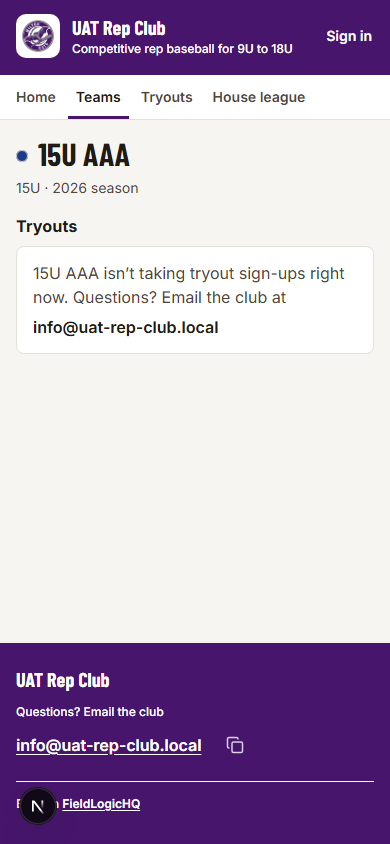
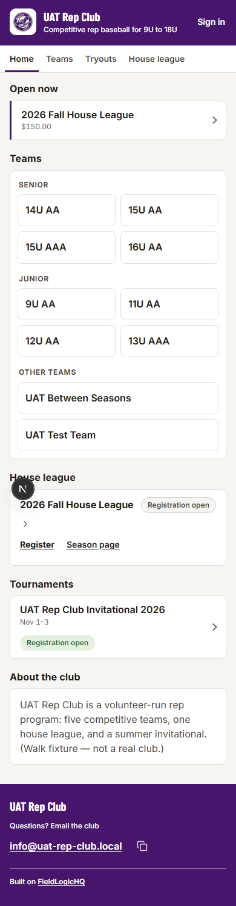
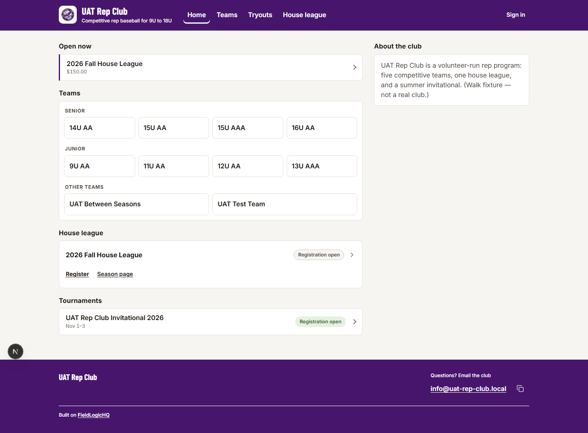
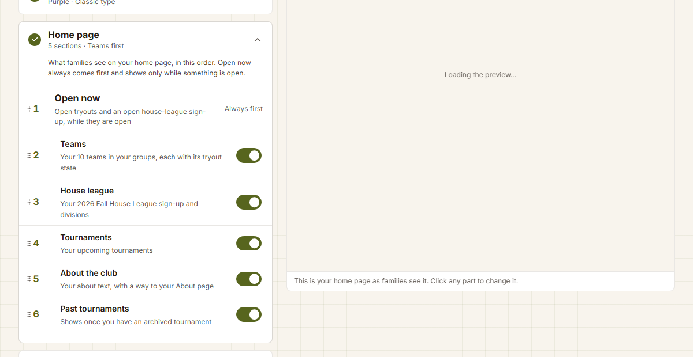

<title>Club Tier Stage 4f Drawings</title>
<link rel="preconnect" href="https://fonts.googleapis.com">
<link rel="preconnect" href="https://fonts.gstatic.com" crossorigin>
<link rel="stylesheet" href="https://fonts.googleapis.com/css2?family=Barlow+Condensed:wght@600;700&family=IBM+Plex+Mono:wght@500;600&family=IBM+Plex+Sans:wght@400;500;600;700&family=Inter:wght@400;500;600;700&display=swap">
<style>
/* Layout: a review document (cool grey chrome, Plex) holding true-size specimens of a club's public site
   (the built club kit: colour band, white tab row, warm ground) and of the warm admin portal. The chrome and the
   specimens deliberately do not share a ground. Same shape as the Stage 4 drawings. */
:root{
  --bg:#E8EBEE; --surface:#FFFFFF; --surface-2:#F3F5F7; --ink:#1A1F24; --muted:#56606B; --line:#D2D7DD;
  --accent:#24584B; --accent-soft:#DCEAE5; --flag:#A8361F; --flag-soft:#F7E2DC; --fix:#2B672A; --fix-soft:#DFEEDB;
  --t-new:#4B2E83; --t-res:#1D4A6E; --t-unc:#5E646B; --ask:#8A5A00; --ask-soft:#F6ECD6;
  --shadow:0 1px 2px rgba(20,30,40,.06),0 6px 20px rgba(20,30,40,.07);
  --f-doc:'IBM Plex Sans',system-ui,-apple-system,'Segoe UI',sans-serif;
  --f-mono:'IBM Plex Mono',ui-monospace,Consolas,monospace;
}
@media (prefers-color-scheme:dark){:root:not([data-theme="light"]){
  --bg:#121519; --surface:#1B1F24; --surface-2:#232930; --ink:#E5E9ED; --muted:#9BA5AF; --line:#313840;
  --accent:#8CC5B3; --accent-soft:#1E3731; --flag:#F0907A; --flag-soft:#3A221D; --fix:#93CF8B; --fix-soft:#1E321F;
  --t-new:#BBA6EE; --t-res:#8FC2E7; --t-unc:#AAB0B7; --ask:#E8B75A; --ask-soft:#3A2E17;
  --shadow:0 1px 2px rgba(0,0,0,.3),0 6px 20px rgba(0,0,0,.3); color-scheme:dark}}
:root[data-theme="dark"]{
  --bg:#121519; --surface:#1B1F24; --surface-2:#232930; --ink:#E5E9ED; --muted:#9BA5AF; --line:#313840;
  --accent:#8CC5B3; --accent-soft:#1E3731; --flag:#F0907A; --flag-soft:#3A221D; --fix:#93CF8B; --fix-soft:#1E321F;
  --t-new:#BBA6EE; --t-res:#8FC2E7; --t-unc:#AAB0B7; --ask:#E8B75A; --ask-soft:#3A2E17;
  --shadow:0 1px 2px rgba(0,0,0,.3),0 6px 20px rgba(0,0,0,.3); color-scheme:dark}
body{background:var(--bg);color:var(--ink);font:15px/1.55 var(--f-doc);margin:0}
.doc{max-width:1240px;margin:0 auto;padding-inline:20px;padding-block:0 80px}
@media (max-width:600px){.doc{padding-inline:16px}}
a{color:var(--accent)}
:focus-visible{outline:3px solid var(--accent);outline-offset:2px}
h1,h2,h3{text-wrap:balance;line-height:1.2}
.doc h2{font-size:24px;margin:40px 0 8px;letter-spacing:-.01em}
.doc h3{font-size:18px;margin:28px 0 6px}
.doc p,.doc li{max-width:78ch}
.lede{font-size:17px}
.muted{color:var(--muted)}
.eyebrow{font:600 11.5px/1.3 var(--f-mono);letter-spacing:.09em;text-transform:uppercase;color:var(--muted)}
.top{position:sticky;top:env(safe-area-inset-top,0px);z-index:30;background:var(--bg);border-bottom:1px solid var(--line)}
.top-in{max-width:1240px;margin:0 auto;padding:10px 20px 0;display:flex;flex-direction:column;gap:8px}
@media (max-width:600px){.top-in{padding:8px 16px 0}}
.top-row{display:flex;flex-wrap:wrap;align-items:baseline;gap:4px 14px}
.top-row h1{font-size:19px;margin:0}
.top-row .st{font-size:13px;color:var(--muted)}
.tabs{display:flex;gap:2px;overflow-x:auto;scrollbar-width:none;margin:0 -4px}
.tabs::-webkit-scrollbar{display:none}
.tabs button{flex:none;font:600 14px/1 var(--f-doc);color:var(--muted);background:none;border:0;border-bottom:3px solid transparent;padding:12px 10px 11px;min-height:44px;cursor:pointer;white-space:nowrap}
.tabs button[aria-selected="true"]{color:var(--ink);border-bottom-color:var(--accent)}
.tabs button .n{font:600 11px/1 var(--f-mono);background:var(--ask-soft);color:var(--ask);border-radius:9px;padding:2px 6px;margin-left:5px;vertical-align:1px}
section.tab{padding-top:8px}
.card{background:var(--surface);border:1px solid var(--line);border-radius:12px;padding:16px 18px;box-shadow:var(--shadow)}
.card h3{margin-top:4px}
.grid2{display:grid;grid-template-columns:repeat(auto-fit,minmax(320px,1fr));gap:14px}
.grid3{display:grid;grid-template-columns:repeat(auto-fit,minmax(260px,1fr));gap:12px}
.grid2>*,.grid3>*{min-width:0}
.verdict{background:var(--surface);border:1px solid var(--line);border-left:5px solid var(--flag);border-radius:0 12px 12px 0;padding:16px 20px;margin:16px 0;box-shadow:var(--shadow)}
.verdict.ok{border-left-color:var(--fix)}
.verdict h2,.verdict h3{margin-top:0}
table.t{border-collapse:collapse;width:100%;font-size:14px;background:var(--surface)}
table.t th{font:600 11.5px/1.3 var(--f-mono);letter-spacing:.07em;text-transform:uppercase;color:var(--muted);text-align:left;padding:10px 12px;border-bottom:1px solid var(--line);background:var(--surface-2)}
table.t td{padding:10px 12px;border-bottom:1px solid var(--line);vertical-align:top}
table.t td.num{font-variant-numeric:tabular-nums;white-space:nowrap}
.tw{overflow-x:auto;border:1px solid var(--line);border-radius:10px}
.tw table.t tr:last-child td{border-bottom:0}
.pill{display:inline-block;font:600 12px/1.4 var(--f-doc);border-radius:20px;padding:2px 10px;background:var(--surface-2);color:var(--muted);border:1px solid var(--line)}
.pill.ok{background:var(--fix-soft);color:var(--fix);border-color:transparent}
.pill.bad{background:var(--flag-soft);color:var(--flag);border-color:transparent}
.pill.half{background:var(--ask-soft);color:var(--ask);border-color:transparent}
.fl,.fx,.mk{font:700 11px/1 var(--f-mono);letter-spacing:.04em;border-radius:5px;padding:5px 7px;cursor:pointer;border:1.5px solid currentColor;background:var(--surface);vertical-align:middle;white-space:nowrap;min-height:24px}
.fl{color:var(--flag);background:var(--flag-soft);border-color:transparent}
.fx{color:var(--fix);background:var(--fix-soft);border-color:transparent}
.fl::before{content:"▲ ";font-size:9px}
.fx::before{content:"✓ ask "}
.mk.new{color:var(--t-new)} .mk.res{color:var(--t-res)} .mk.unc{color:var(--t-unc)}
.chips{display:flex;flex-wrap:wrap;gap:6px;align-items:center;margin:6px 0 10px}
.prov{font:600 11px/1 var(--f-mono);color:var(--ask);background:var(--ask-soft);border-radius:5px;padding:5px 7px}
.stage{display:flex;flex-wrap:wrap;gap:22px;align-items:flex-start;margin:14px 0 8px}
.stage>.col{min-width:0;display:flex;flex-direction:column;gap:8px}
.cap{font-size:13px;color:var(--muted);max-width:390px}
.cap b{color:var(--ink)}
.ph-wrap{position:relative;width:390px;max-width:100%}
@media (max-width:440px){.ph-wrap{width:auto;max-width:none;margin-inline:-16px;overflow-x:auto}}
.ph{position:relative;width:390px;flex:none;background:#fff;border-radius:18px;overflow:hidden;outline:1px solid var(--line);box-shadow:var(--shadow)}
@media (max-width:440px){.ph{border-radius:0;outline:0}}
.fold{position:absolute;left:0;right:0;top:844px;border-top:2px dashed #D9431F;z-index:5;pointer-events:none}
.fold span{position:absolute;right:6px;top:-21px;font:700 10.5px/1 var(--f-mono);color:#fff;background:#D9431F;border-radius:4px;padding:4px 6px}
.shot{display:block;width:390px;max-width:none;height:auto}
.shot-wrap{position:relative;width:390px;flex:none;border-radius:14px;overflow:hidden;outline:1px solid var(--line);box-shadow:var(--shadow);background:#fff}
@media (max-width:440px){.shot-wrap{border-radius:0;outline:0;margin-inline:-16px;width:auto;max-width:none;overflow-x:auto}}
.dt-tools{display:flex;gap:8px;align-items:center;flex-wrap:wrap;font-size:13px;color:var(--muted)}
.btn-d{font:600 13.5px/1 var(--f-doc);min-height:36px;padding:8px 12px;border-radius:8px;border:1px solid var(--line);background:var(--surface);color:var(--ink);cursor:pointer}
.btn-d:hover{border-color:var(--accent)}
.btn-d.pri{background:var(--accent);color:var(--surface);border-color:var(--accent)}
.dt-wrap{overflow-x:auto;border-radius:12px;outline:1px solid var(--line);box-shadow:var(--shadow);background:#fff;max-width:100%}
.dt{width:1440px;background:#fff}
.dt-wrap.fit .dt{zoom:var(--z,1)}
.dt-shot{display:block;width:1440px;max-width:none}
.dt-wrap.fit .dt-shot{zoom:var(--z,1)}
.station{border-top:1px solid var(--line);margin-top:34px;padding-top:4px}
.station>h3 .no{font:600 12px/1 var(--f-mono);color:var(--muted);margin-right:8px}
.read{display:grid;grid-template-columns:1fr;gap:10px;max-width:560px;flex:1 1 380px;min-width:0}
.read h4{margin:4px 0 2px;font-size:13px;font-family:var(--f-mono);letter-spacing:.07em;text-transform:uppercase;color:var(--muted)}
.read ul{margin:0;padding-left:18px}
.read li{margin:0 0 6px}
.measure{font:500 12.5px/1.5 var(--f-mono);background:var(--surface-2);border:1px solid var(--line);border-radius:8px;padding:10px 12px;color:var(--ink);overflow-x:auto}
.opt-h{display:flex;flex-wrap:wrap;gap:8px;align-items:center;margin:18px 0 4px}
.opt-h b{font-size:15px}
.opt{font:700 11px/1 var(--f-mono);border-radius:5px;padding:5px 8px;background:var(--surface-2);border:1px solid var(--line);color:var(--ink)}
.opt.rec{background:var(--fix-soft);color:var(--fix);border-color:transparent}
.strip-wrap{width:390px;max-width:100%;overflow-x:auto;border-radius:10px;outline:1px solid var(--line);box-shadow:var(--shadow);background:#fff}
@media (max-width:440px){.strip-wrap{width:auto;margin-inline:-16px;border-radius:0}}
.band-wrap{overflow-x:auto;border-radius:10px;outline:1px solid var(--line);box-shadow:var(--shadow);background:#fff;max-width:100%}
.ask{background:var(--surface);border:1px solid var(--line);border-left:5px solid var(--t-res);border-radius:0 12px 12px 0;padding:14px 18px;margin:16px 0;box-shadow:var(--shadow)}
.ask.decides{border-left-color:var(--flag)}
.ask h3{margin:0 0 6px;font-size:17px}
.ask h3 .no{font:700 13px/1 var(--f-mono);color:var(--muted);margin-right:6px}
.ask .opts{display:flex;flex-direction:column;gap:4px;margin:10px 0}
.ask .opts label{display:flex;gap:10px;align-items:flex-start;font-size:14px;line-height:1.45;padding:8px 10px;border-radius:8px;min-height:44px;box-sizing:border-box;cursor:pointer;border:1px solid transparent}
.ask .opts label:hover{background:var(--surface-2)}
.ask .opts label.rec{background:var(--fix-soft)}
.ask .opts label.rec::after{content:"Recommended";margin-left:auto;font:700 10.5px/1.6 var(--f-mono);color:var(--fix);white-space:nowrap;padding-left:8px}
.ask .opts input{width:20px;height:20px;flex:none;margin:0;accent-color:var(--accent)}
.ask .rides{font-size:13.5px;color:var(--muted)}
.ask textarea{width:100%;box-sizing:border-box;min-height:60px;border:1px solid var(--line);border-radius:8px;padding:8px 10px;font:14px/1.45 var(--f-doc);background:var(--surface);color:var(--ink);resize:vertical}
.paste{position:sticky;bottom:12px;z-index:20;display:flex;flex-wrap:wrap;gap:10px;align-items:center;justify-content:space-between;background:var(--surface);border:1px solid var(--line);border-radius:12px;padding:10px 14px;box-shadow:var(--shadow);margin-top:20px}
.paste textarea{width:100%;min-height:140px;font:12.5px/1.45 var(--f-mono);border:1px solid var(--line);border-radius:8px;padding:8px;background:var(--surface-2);color:var(--ink)}
dialog.note{max-width:min(560px,calc(100vw - 32px));border:1px solid var(--line);border-radius:14px;padding:0;background:var(--surface);color:var(--ink);box-shadow:0 20px 60px rgba(0,0,0,.35)}
dialog.note::backdrop{background:rgba(15,20,25,.45)}
dialog.note .nh{display:flex;gap:10px;align-items:flex-start;justify-content:space-between;padding:16px 18px 6px}
dialog.note .nh h3{margin:0;font-size:17px}
dialog.note .nb{padding:0 18px 18px;font-size:14.5px}
dialog.note .nb h4{font:600 11.5px/1.3 var(--f-mono);letter-spacing:.08em;text-transform:uppercase;color:var(--muted);margin:14px 0 4px}
dialog.note .nb p{margin:0 0 6px}
dialog.note .x{font-size:22px;line-height:1;background:none;border:0;color:var(--muted);cursor:pointer;min-width:44px;min-height:44px;margin:-10px -10px 0 0}
.legend{display:flex;flex-wrap:wrap;gap:8px 16px;font-size:13px;color:var(--muted);align-items:center}
@media (prefers-reduced-motion:reduce){*{scroll-behavior:auto!important;transition:none!important}}
</style>

<style>
/* ══ The club's public site as BUILT (Stage 4b-1 kit, matched to today's captures): a 72 px colour band, a white
   44 px tab row on a phone (tabs 14/600, 3 px underline in the club's ink), tabs inside the band at a desk (16/600),
   the warm ground, white lists with a 1 px line. Fixed light specimens: they do not follow the reader's theme. ══ */
.cs{--g-bg:#F5F3EF;--g-card:#FFFFFF;--g-ink:#1F1B16;--g-soft:#4E473D;--g-dim:#6F675B;--g-line:#E4E0D8;--g-line2:#D6D0C4;
  --ok:#2C6A2A;--ok-tint:#E3F0E1;--c-fill:#1D3557;--c-on:#FFFFFF;--c-ink:#1D3557;--c-mark:#E9B949;
  background:var(--g-bg);color:var(--g-ink);font:14px/1.5 'Inter',system-ui,sans-serif;text-align:left;position:relative}
.cs *{box-sizing:border-box}
.cs a{color:inherit;text-decoration:none}
.cs .hd{background:var(--c-fill);color:var(--c-on);display:flex;align-items:center;gap:12px;padding:0 16px;height:72px}
.cs .logo{width:44px;height:44px;border-radius:10px;flex:none;display:grid;place-items:center;font:700 17px/1 'Barlow Condensed',sans-serif;background:#E9B949;color:#1D3557}
.cs .club{font:700 20px/1.1 'Barlow Condensed','Arial Narrow',sans-serif;min-width:0;white-space:nowrap}
.cs .club small{display:block;font:600 12px/1.3 'Inter',sans-serif;margin-top:3px}
.cs .signin{margin-left:auto;font:600 14px/1 'Inter';min-height:44px;display:flex;align-items:center;flex:none;white-space:nowrap}
.cs .rowtabs{display:flex;gap:4px;padding:0 8px;background:#fff;border-bottom:1px solid var(--g-line);overflow:hidden;white-space:nowrap}
.cs .rowtabs span{flex:none;display:inline-flex;align-items:center;min-height:44px;padding:3px 8px 0;border-bottom:3px solid transparent;font:600 14px/1 'Inter';color:var(--g-soft)}
.cs .rowtabs span.on{color:var(--g-ink);border-bottom-color:var(--c-ink)}
.cs .rowtabs span.nw{box-shadow:inset 0 -3px 0 #8A63D2;color:#4B2E83}
.cs .rowtabs span.nw.on{box-shadow:none}
.cs .nw,.wm .chg{cursor:pointer}
.cs .bd{padding:16px;display:flex;flex-direction:column;gap:12px}
.cs h2.st{font:600 16px/1.3 'Inter';margin:4px 0 -2px}
.cs .ptitle h1{font:700 32px/1.05 'Barlow Condensed',sans-serif;margin:0}
.cs .ptitle .meta{color:var(--g-soft);margin-top:4px;font-size:14px}
.cs .list{background:#fff;border:1px solid var(--g-line);border-radius:8px;overflow:hidden}
.cs .row{position:relative;display:flex;align-items:center;gap:12px;padding:12px 40px 12px 16px;min-height:60px;border-top:1px solid var(--g-line)}
.cs .list>.row:first-child,.cs .list>.band+.row{border-top:0}
.cs .row .main{flex:1;min-width:0;display:flex;flex-direction:column;gap:3px}
.cs .row .nm{font:600 16px/1.3 'Inter'}
.cs .row .sub{font-size:12px;color:var(--g-dim);font-variant-numeric:tabular-nums}
.cs .row .sub b{color:var(--g-soft);font-weight:600}
.cs .row.stack{flex-direction:column;align-items:flex-start;gap:8px}
.cs .chev{position:absolute;right:16px;top:50%;width:9px;height:9px;border:solid var(--g-soft);border-width:2px 2px 0 0;transform:translateY(-50%) rotate(45deg)}
.cs .band{font:700 12px/1.2 'Inter';letter-spacing:.06em;text-transform:uppercase;color:var(--g-soft);background:var(--g-bg);padding:8px 16px;border-top:1px solid var(--g-line)}
.cs .list>.band:first-child{border-top:0}
.cs .chip{display:inline-flex;align-items:center;font:600 12px/1 'Inter';border-radius:20px;padding:6px 10px;white-space:nowrap;flex:none}
.cs .chip.ok{background:var(--ok-tint);color:var(--ok)}
.cs .chip.nt{background:var(--g-bg);color:var(--g-soft);border:1px solid var(--g-line2)}
.cs .tgrid{display:grid;grid-template-columns:1fr 1fr;gap:8px;padding:12px}
.cs .tgrid i{font-style:normal;display:flex;align-items:center;min-height:52px;border:1px solid var(--g-line);border-radius:8px;padding:8px 12px;font:600 16px/1.2 'Inter'}
.cs .tband{grid-column:1/-1;font:700 12px/1.2 'Inter';letter-spacing:.06em;text-transform:uppercase;color:var(--g-soft);padding:4px 2px 0}
.cs .ft{background:var(--c-fill);color:var(--c-on);padding:22px 16px 18px;display:flex;flex-direction:column;gap:12px}
.cs .ft .fname{font:700 20px/1.1 'Barlow Condensed',sans-serif}
.cs .ft .fs{font:600 12px/1.3 'Inter'}
.cs .ft .fm{font:600 16px/1.3 'Inter';text-decoration:underline;text-underline-offset:3px}
.cs .ft .credit{font:600 12px/1.4 'Inter';border-top:1px solid rgba(255,255,255,.5);padding-top:12px}
.cs .addr{background:#E9E9EB;padding:8px 12px;display:flex;align-items:center;gap:8px;font:500 13px/1 -apple-system,'Segoe UI',sans-serif;color:#222}
.cs .addr span{flex:1;background:#fff;border-radius:8px;padding:8px 10px;text-align:center}
.cs .nf{padding:40px 20px;display:flex;flex-direction:column;gap:12px}
.cs .nf h1{font:700 32px/1.05 'Barlow Condensed',sans-serif;margin:0}
.cs .nf p{margin:0;color:var(--g-soft);font-size:16px}
.cs .nf .go{font:600 16px/1 'Inter';color:var(--c-ink);text-decoration:underline;text-underline-offset:3px;min-height:44px;display:flex;align-items:center}
/* the desk band: tabs sit inside it beside the club's name (16/600, white, the club's mark underlines the current) */
.cs .dband{background:var(--c-fill);color:var(--c-on);height:72px;display:flex;align-items:center}
.cs .dband .in{display:flex;align-items:center;gap:12px;height:72px;min-width:0;flex:1}
.cs .dtabs{display:flex;gap:6px;margin-left:28px;overflow:hidden;min-width:0;flex:0 1 auto}
.cs .dtabs span{flex:none;display:inline-flex;align-items:center;min-height:44px;padding:0 10px;border-radius:8px;font:600 16px/1 'Inter';color:#fff}
.cs .dtabs span.on{box-shadow:inset 0 -3px 0 var(--c-mark)}
.cs .dtabs span.nw{outline:2px dashed rgba(233,185,73,.9);outline-offset:-4px}
.cs.wide .dband .in{width:1152px;margin:0 auto;flex:none}
.cs.wide .page{width:1152px;margin:0 auto;padding:32px 0 48px;display:grid;grid-template-columns:744px 380px;gap:28px}
.cs.wide .page.one{grid-template-columns:744px}
.cs.wide .page>div{display:flex;flex-direction:column;gap:12px;min-width:0}
.cs.wide .tgrid{grid-template-columns:repeat(4,1fr)}
.cs.wide .ft{padding:28px max(24px,calc((100% - 1152px)/2)) 22px;flex-direction:row;flex-wrap:wrap;justify-content:space-between}
.cs.wide .ft .credit{flex-basis:100%}
.cs table.tt{width:100%;border-collapse:collapse;background:#fff}
.cs table.tt th{font:700 12px/1.2 'Inter';letter-spacing:.06em;text-transform:uppercase;color:var(--g-soft);text-align:left;padding:14px 16px;border-bottom:1px solid var(--g-line)}
.cs table.tt td{padding:12px 16px;border-top:1px solid var(--g-line);font-size:14px;vertical-align:middle}
.cs table.tt td.nm{font:600 16px/1.3 'Inter'}
.cs table.tt td.dd{color:var(--g-soft);font-variant-numeric:tabular-nums;white-space:nowrap}
.cs table.tt tr.b td{font:700 12px/1.2 'Inter';letter-spacing:.06em;text-transform:uppercase;color:var(--g-soft);background:var(--g-bg);padding:9px 16px}
.cs table.tt td.cv{width:40px;position:relative}
.cs .edgeline{position:absolute;top:0;bottom:0;border-left:2px dashed #D9431F;z-index:4}
.cs .edgeline span{position:absolute;top:2px;left:4px;font:700 10px/1 'IBM Plex Mono',monospace;color:#fff;background:#D9431F;border-radius:3px;padding:3px 5px;white-space:nowrap}
/* the warm admin portal (the Public site editor), matched to today's capture */
.wm{background:#F8F4ED;color:#241E15;font:14px/1.5 'Inter',system-ui,sans-serif;position:relative;padding:16px;box-sizing:border-box;border-radius:12px;outline:1px solid var(--line)}
.wm *{box-sizing:border-box}
.wm .ecard{background:#fff;border:1px solid #E5DDCD;border-radius:10px;overflow:hidden}
.wm .ehd{display:flex;gap:12px;align-items:center;padding:14px 16px}
.wm .tick{width:22px;height:22px;border-radius:50%;background:#57651E;flex:none;position:relative}
.wm .tick::after{content:"";position:absolute;left:7px;top:4px;width:6px;height:11px;border:solid #fff;border-width:0 2px 2px 0;transform:rotate(45deg)}
.wm .ehd b{display:block;font:650 17px/1.2 'Inter'}
.wm .ehd small{display:block;font-size:13px;color:#4F4636}
.wm .lead{padding:0 16px 12px;font-size:13px;color:#4F4636;border-bottom:1px solid #E5DDCD}
.wm .er{display:flex;align-items:center;gap:10px;padding:10px 16px 10px 12px;border-top:1px solid #E5DDCD;min-height:62px}
.wm .er:first-of-type{border-top:0}
.wm .hd2{font:600 15px/1 'Inter';color:#57651E;width:30px;flex:none;display:flex;gap:4px;align-items:center}
.wm .hd2::before{content:"⠿";color:#7A6F5E;font-size:12px}
.wm .er .g{flex:1;min-width:0}
.wm .er .g b{display:block;font:600 14.5px/1.3 'Inter'}
.wm .er .g span{display:block;font-size:13px;color:#4F4636}
.wm .er .g span.chg{color:#4B2E83;font-weight:600}
.wm .sw{width:44px;height:26px;border-radius:13px;background:#57651E;position:relative;flex:none}
.wm .sw::after{content:"";position:absolute;right:3px;top:3px;width:20px;height:20px;border-radius:50%;background:#fff}
.wm .sw.off{background:#CFC6B4}.wm .sw.off::after{right:auto;left:3px}
.wm .af{font-size:12.5px;color:#7A6F5E;white-space:nowrap}
.wm .er.gone{opacity:.45;text-decoration:line-through}
</style>

<header class="top">
  <div class="top-in">
    <div class="top-row">
      <h1>Club Tier · Stage 4f · A Tournaments tab</h1>
      <span class="st">Drawn 2026-10-25 · ⚖ ruled 2026-10-25: all 7 asks as recommended, Past tournaments a sub-option of Tournaments · nothing built · words provisional</span>
    </div>
    <nav class="tabs" role="tablist" aria-label="Sections">
      <button role="tab" data-tab="start" aria-selected="true">Start here</button>
      <button role="tab" data-tab="today">Today</button>
      <button role="tab" data-tab="end">The end state</button>
      <button role="tab" data-tab="flow">Flow</button>
      <button role="tab" data-tab="check">Design check</button>
      <button role="tab" data-tab="asks">Asks<span class="n">7</span></button>
    </nav>
  </div>
</header>
<main class="doc">

<!-- ═════════════════════════════════ START ═════════════════════════════════ -->
<section class="tab" id="tab-start" data-tab="start">

<div class="verdict ok">
  <h2>⚖ Ruled 2026-10-25 (owner)</h2>
  <p>All seven asks as recommended (option A), with one change to Ask 3: <b>Past tournaments is a sub-option under Tournaments, available only while Tournaments is on</b> (frame e). In short:</p>
  <ul>
    <li>One Tournaments tab holds current and past.</li>
    <li>The Past tournaments tab retires; this amends the 2026-10-19 "Names" line.</li>
    <li>The home's Tournaments section stays unchanged.</li>
    <li>The editor's Tournaments switch covers the section, the tab and the page.</li>
    <li>A finished tournament nobody archived is listed under Past tournaments.</li>
    <li>On a phone, the current tab scrolls into view.</li>
    <li>The page lives at /tournaments. The old address forwards to it, and archive pages light the tab and drop "← Past tournaments".</li>
    <li>The tab sits where the editor's Tournaments row sits.</li>
  </ul>
  <p>Next: /marketing on the provisional words, then the 4f build prompt.</p>
</div>

<div class="verdict ok">
  <h2>What 4f makes true</h2>
  <p class="lede">A family on any page of a club's site, a team page included, sees <b>Tournaments</b> in the club's top row, taps it, and gets the club's tournaments: what is on now, what is coming up and what has finished, each one tap from its own site. The club's admin shows or hides it with the switch they already have, in the Public site editor. A club whose plan does not carry tournaments sees no change at all.</p>
  <p>Your ask (2026-10-24, ruled) was a Tournaments tab, shown only while the club has a tournament, with a switch in the editor. Everything below keeps that. Where I push back is on <b>how many tournament tabs the row carries</b>, because the row has run out of room.</p>
</div>

<div class="verdict">
  <h3>Which ask decides the rest: <a href="#asks" data-goto="asks">Ask 1, one tournament tab or two</a></h3>
  <p>If the new tab sits beside today's <b>Past tournaments</b> tab (option B, the ask as written), a full club's row needs six tabs. I measured today's row in the club's own type: six tabs do not fit a phone, and they do not fit a desk window narrower than about 1,075 px, which includes a laptop browser at 1,024 px and a tablet turned sideways. Both rows scroll sideways with no scrollbar, so the tabs past the edge are invisible. <b>I recommend one Tournaments tab that holds both current and past (option A)</b>, which retires the separate Past tournaments tab and keeps the row at five. Asks 3, 6 and 7 read differently under each option; each says how.</p>
</div>

<h2>The three push-backs, before the work</h2>
<div class="grid3">
  <div class="card">
    <div class="eyebrow">Push-back 1</div>
    <h3>A tab that comes and goes</h3>
    <p>The worry in the prompt was trust: a tab that vanishes between tournaments. <b>The code already does this for every tab.</b> Teams shows only while a team is listed, House league only while a season is published, Past tournaments only once something is archived, and Tryouts is openly seasonal (ruled 2026-10-20, Ask 14). So "only while the club has a tournament" is the house rule, not a new risk.</p>
    <p><b>The real cost is room.</b> <button class="fl" data-finding="T2">T2</button> A second tournament tab does not fit. One Tournaments tab that holds both current and past fixes that, and it also answers the trust worry for free: a club that has hosted even once keeps the tab all year, because it always has something past to show. → <a href="#asks" data-goto="asks">Ask 1</a></p>
  </div>
  <div class="card">
    <div class="eyebrow">Push-back 2</div>
    <h3>Beside the home section, or instead of it</h3>
    <p>The home's Tournaments section already lists <b>every</b> running and coming tournament, with no cap, plus those finished in the last 30 days. So a list page would repeat it. The house already has an answer for this. The home's Teams grid shows every team and the Teams tab shows them again as a list; the 2026-10-20 build kept "no All teams link, because the Teams tab is one tap away".</p>
    <p><b>Recommendation:</b> the home section stays exactly as it is, and the page adds what the home cannot hold: the past. The two say different things: the home says "what's on", the page says "everything we host". → <a href="#asks" data-goto="asks">Ask 2</a></p>
  </div>
  <div class="card">
    <div class="eyebrow">Push-back 3</div>
    <h3>One switch or two</h3>
    <p><b>No new switch is needed.</b> In the editor, the Teams and House league switches already hide the home section <i>and</i> the tab together ("a tab contradicting the page it sits on is worse than no tab", in the code). Only Tournaments breaks that pattern today, because it has a home section and no tab. 4f gives the Tournaments switch the same reach as its neighbours.</p>
    <p>Under option A the Past tournaments switch keeps its own job: it shows or hides the past part of the Tournaments page. <b>Ruled 2026-10-25:</b> it is a sub-option of Tournaments, available only while Tournaments is on. → <a href="#asks" data-goto="asks">Ask 3</a></p>
  </div>
</div>

<h2>Where I widen the question</h2>
<div class="grid2">
  <div class="card"><b>A finished tournament can fall out of sight.</b> The home drops a finished tournament after 30 days, and Past tournaments lists only tournaments the club has <i>archived</i>. A tournament that ended in August and was never archived appears on no list, so a parent looking for its results finds nothing. The Tournaments page is the natural place to close that gap. <button class="fl" data-finding="T4">T4</button> → Ask 4</div>
  <div class="card"><b>On a phone, the current tab can be off the screen.</b> The row scrolls sideways but never brings the current tab into view, so a family on the fifth tab may see no tab lit at all. That is true today for Past tournaments in tryout season, and any new tab makes it more common. It is a small fix that rides with 4f. <button class="fl" data-finding="T3">T3</button> → Ask 5</div>
  <div class="card"><b>The editor already says "home page" for things that are tabs.</b> Its list opens with "What families see on your home page", but Past tournaments is only ever a tab, and Teams and House league switch their tabs too. Once Tournaments has a tab as well, that line should name both places. <button class="fl" data-finding="T5">T5</button> → Ask 3</div>
  <div class="card"><b>A new address can hide a tournament.</b> A club page at <code>/tournaments</code> would win over a tournament whose own address is "tournaments", and the platform has no reserved-names list for tournament addresses (reported 2026-10-20). There is none on dev. Production must be checked as the build's first step. <button class="fl" data-finding="T6">T6</button> → Ask 6</div>
</div>

<h2>What 4f does not touch</h2>
<ul>
  <li><b>The tournament's own pages.</b> A row on the Tournaments page opens the tournament's own site, which wears the tournament's look, not the club's. How a visitor gets back to the club from there, and the club advertising itself to tournament visitors, belong to the Public tournament site review. <button class="fl" data-finding="T7">T7</button></li>
  <li><b>The tab row's rules.</b> Its type, its colours, the phone row that scrolls sideways and the desk tabs inside the band all stay. Only one fix to the row's behaviour rides along (Ask 5), because 4f makes the problem worse.</li>
  <li><b>Stage 13.</b> 4f adds a door to the club's public top row. Stage 13's list of stages that add a door (7, 9, 10, 11, 12) gets <b>4f</b> added, so the navigation check finds it. No navigation is redesigned here.</li>
</ul>

<h2>How to read the drawings</h2>
<div class="legend">
  <span><button class="mk new" data-note="A part that does not exist today.">NEW</button> does not exist today</span>
  <span><button class="mk res" data-note="A part that exists today and changes what it says, shows or does.">RESTYLED</button> exists, changes</span>
  <span><button class="mk unc" data-note="A part kept exactly as it is built today.">UNCHANGED</button> kept</span>
  <span><button class="fl" data-finding="T2">T2</button> a problem found today</span>
  <span><button class="fx" data-ask="1">1</button> the ask that decides it</span>
  <span><span class="prov">PROVISIONAL</span> words not yet through /marketing</span>
  <span><b style="color:#4B2E83">purple</b> underline or words, or a <b>dashed</b> outline = the part that changes (the drawing's mark, not the product's; tap it)</span>
</div>
<p class="muted">Phone frames are at true size (390 px wide); open this page on your phone too, so the widths are the real ones. Desktop frames fit the window, and a button shows them at true size. The tab rows are drawn in the club's real type at the real widths, so where a tab runs off the edge, it runs off on a real phone too. The club in the drawings is invented: <b>Bayview Bats</b>, rep and house-league baseball, navy and gold. Today in the drawings is Sunday, October 25, 2026.</p>
</section>

<!-- ═════════════════════════════════ TODAY ═════════════════════════════════ -->
<section class="tab" id="tab-today" data-tab="today" hidden>
<h2>Today, captured from the dev server (2026-10-25)</h2>
<p class="muted">The fixture club "UAT Rep Club" has teams, a house league and one tournament coming up, and nothing archived yet, so its row has no Past tournaments tab.</p>

<div class="station"><h3><span class="no">T-1</span>A team page: no way to a tournament</h3>
<div class="stage">
  <div class="col">
    <div class="chips"><span class="eyebrow">Today · team page · 390</span><button class="fl" data-finding="T1">T1</button></div>
    <div class="shot-wrap"></div>
  </div>
  <div class="read">
    <h4>What a family sees</h4>
    <ul>
      <li>The row reads Home · Teams · Tryouts · House league. Nothing on the page says the club hosts a tournament next weekend.</li>
      <li>The only way there: <b>Home</b>, then scroll past Open now, the team grid and House league. On this phone the Tournaments heading sits <b>963 px</b> down the home page, the second screen.</li>
    </ul>
  </div>
</div></div>

<div class="station"><h3><span class="no">T-2</span>The home page: the section that holds them</h3>
<div class="stage">
  <div class="col">
    <div class="chips"><span class="eyebrow">Today · home · 390</span><button class="mk unc" data-note="The home's Tournaments section: running and coming tournaments, soonest first, then any finished in the last 30 days; each row is the name, its dates and one status chip (Live now, This weekend, Registration open, Finished). No cap. Absent when there is nothing to list or the club hid it.">Tournaments section</button></div>
    <div class="shot-wrap"></div>
  </div>
  <div class="read">
    <h4>What is already right</h4>
    <ul>
      <li>The rows tell the truth (S4-03, built): Live now only while today is inside the dates.</li>
      <li>A draft never shows, and a section with nothing to show is absent, never "check back soon".</li>
    </ul>
    <h4>What 4f must not break</h4>
    <ul>
      <li>The home's order is the club's (the editor drags it) and the tab row follows the same order.</li>
    </ul>
  </div>
</div>
<div class="dt-tools"><span class="eyebrow">Today · home · 1440</span><button class="btn-d" data-fit>Show at true size</button><span class="zl"></span></div>
<div class="dt-wrap fit"></div>
</div>

<div class="station"><h3><span class="no">T-3</span>The tab row, measured</h3>
<p>Widths in the club's real type (Inter 600). A phone tab is its text plus 16 px with 4 px between, starting 8 px in. A desk tab is its text plus 20 px with 6 px between, starting 28 px after the club's name.</p>
<div class="measure">PHONE (390)   Home 56 · Teams 61 · Tryouts 68 · House league 109 · Tournaments 106 · Past tournaments 135
              today, off-season:  Home Teams House-league Past-tournaments           → ends at 381  ✓ fits
              today, in tryout season: + Tryouts                                     → ends at 453  ✗ Past tournaments cut
              B (two tabs), in tryout season: all six                                → ends at 563  ✗ two tabs off-screen
              A (one tab), off-season                                                → ends at 352  ✓ fits
              A (one tab), in tryout season                                          → ends at 428  ~ Tournaments shows 72 of 106 px
DESK          Home 66 · Teams 71 · Tryouts 79 · House league 126 · Tournaments 122 · Past tournaments 156
              room between the name and Sign in: 541 px at a 960 window, 605 at 1,024, 781 from 1,200 up
              today's five: 522 · A's five: 488 · B's six: 656 → B is clipped below a ~1,075 px window</div>
<p class="muted">Both rows scroll sideways with the scrollbar hidden. On a phone a cut tab is a hint to swipe. On a desk with a mouse there is no hint and no easy way to scroll. <button class="fl" data-finding="T2">T2</button></p>
</div>

<div class="station"><h3><span class="no">T-4</span>The Public site editor: the Home page list</h3>
<div class="chips"><span class="eyebrow">Today · editor · 1440 (crop)</span><button class="fl" data-finding="T5">T5</button></div>
<div class="dt-wrap" style="max-width:1200px"></div>
<div class="read" style="max-width:none;margin-top:12px">
  <h4>What each switch does today</h4>
  <ul>
    <li><b>Teams, House league:</b> the home section <i>and</i> the tab.</li>
    <li><b>Tournaments:</b> the home section only (there is no tab).</li>
    <li><b>Past tournaments:</b> the tab only (it is never a home section). The page's address keeps working when hidden.</li>
    <li>The drag order sorts the home and the tabs together.</li>
  </ul>
</div>
</div>
</section>

<!-- ═════════════════════════════════ END STATE ═════════════════════════════════ -->
<section class="tab" id="tab-end" data-tab="end" hidden>
<h2>The end state</h2>
<p class="muted">Each frame is drawn under the recommended option first, then option B where it differs. <span class="prov">PROVISIONAL</span> words throughout: they go through /marketing after you rule.</p>

<!-- (a) the row -->
<div class="station" id="e-row"><h3><span class="no">a</span>The top row with a tournament</h3>

<div class="opt-h"><span class="opt">TODAY</span><b>Bayview Bats in tryout season, with something archived</b></div>
<div class="stage"><div class="col">
  <div class="strip-wrap"><div class="cs" style="width:390px;position:relative">
    <div class="hd"><span class="logo">BB</span><span class="club">Bayview Bats<small>Rep and house-league baseball</small></span><span class="signin">Sign in</span></div>
    <div class="rowtabs"><span>Home</span><span class="on">Teams</span><span>Tryouts</span><span>House league</span><span>Past tournaments</span></div>
  </div></div>
  <div class="cap">Today's row already runs off a phone in tryout season: Past tournaments shows its first 72 px. The coming tournament is not in the row at all.</div>
</div></div>

<div class="opt-h"><span class="opt rec">A · RECOMMENDED</span><b>One Tournaments tab holds current and past</b><button class="fx" data-ask="1">1</button></div>
<div class="stage">
  <div class="col">
    <div class="chips"><span class="eyebrow">Phone · tryout season</span><button class="mk new" data-note="NEW. The Tournaments tab: present while the club has a tournament on now, coming up, recently finished or past. It sits where the club's editor puts the Tournaments row (by default after House league). It replaces the Past tournaments tab, whose list moves onto the Tournaments page.">Tournaments tab</button></div>
    <div class="strip-wrap"><div class="cs" style="width:390px">
      <div class="hd"><span class="logo">BB</span><span class="club">Bayview Bats<small>Rep and house-league baseball</small></span><span class="signin">Sign in</span></div>
      <div class="rowtabs"><span>Home</span><span class="on">Teams</span><span>Tryouts</span><span>House league</span><span class="nw">Tournaments</span></div>
    </div></div>
    <div class="chips" style="margin-top:10px"><span class="eyebrow">Phone · off-season (no Tryouts tab)</span></div>
    <div class="strip-wrap"><div class="cs" style="width:390px">
      <div class="hd"><span class="logo">BB</span><span class="club">Bayview Bats<small>Rep and house-league baseball</small></span><span class="signin">Sign in</span></div>
      <div class="rowtabs"><span>Home</span><span class="on">Teams</span><span>House league</span><span class="nw">Tournaments</span></div>
    </div></div>
    <div class="chips" style="margin-top:10px"><span class="eyebrow">Phone · on the Tournaments page, tryout season</span><button class="fx" data-ask="5">5</button></div>
    <div class="strip-wrap"><div class="cs" style="width:390px">
      <div class="hd"><span class="logo">BB</span><span class="club">Bayview Bats<small>Rep and house-league baseball</small></span><span class="signin">Sign in</span></div>
      <div class="rowtabs" style="margin-left:-46px"><span>Home</span><span>Teams</span><span>Tryouts</span><span>House league</span><span class="on">Tournaments</span></div>
    </div></div>
    <div class="cap">With the current tab brought into view (Ask 5), the row opens scrolled so <b>Tournaments</b> is whole and lit; Home slips off the left edge and comes back with a swipe.</div>
  </div>
  <div class="read">
    <h4>Why one tab</h4>
    <ul>
      <li><b>It fits.</b> Off-season the whole row fits a phone with 38 px to spare. In tryout season the last tab still shows most of its word, the same overhang Past tournaments has today.</li>
      <li><b>It stays put.</b> A club that has hosted once keeps the tab all year: between tournaments it opens on the past ones. So the "comes and goes" worry applies only to a club that has never hosted, which has no tab today either.</li>
      <li><b>One word for one place.</b> "Tournaments" is the tab, the page and the home section; "Past tournaments" stays as the heading of the page's past part, the word you ruled.</li>
    </ul>
    <h4>What retires</h4>
    <ul><li>The separate Past tournaments <b>tab</b>. Its page's old address keeps working and opens the Tournaments page at its past part (Ask 6).</li></ul>
  </div>
</div>

<div class="opt-h"><span class="opt">B · AS ASKED</span><b>A seasonal Tournaments tab beside Past tournaments</b><button class="fx" data-ask="1">1</button></div>
<div class="stage">
  <div class="col">
    <div class="chips"><span class="eyebrow">Phone · tryout season</span><button class="fl" data-finding="T2">T2</button></div>
    <div class="strip-wrap"><div class="cs" style="width:390px;position:relative">
      <div class="hd"><span class="logo">BB</span><span class="club">Bayview Bats<small>Rep and house-league baseball</small></span><span class="signin">Sign in</span></div>
      <div class="rowtabs"><span>Home</span><span class="on">Teams</span><span>Tryouts</span><span>House league</span><span class="nw">Tournaments</span><span>Past tournaments</span></div>
    </div></div>
    <div class="cap">Six tabs need 563 px. <b>Tournaments</b> shows 72 px, and <b>Past tournaments</b> is entirely off the screen.</div>
  </div>
  <div class="read">
    <h4>What B costs</h4>
    <ul>
      <li>On a phone the club's oldest door (Past tournaments) disappears off the edge whenever both tournament tabs show.</li>
      <li>On a desk it is worse, because there is no swipe. See the 1,024 band below.</li>
      <li>Between tournaments the Tournaments tab leaves while Past tournaments stays, so a family meets two different rows across the year.</li>
    </ul>
  </div>
</div>

<h3>At a desk</h3>
<p class="muted">The band at three window widths, true size (scroll sideways inside the frame on a small screen). The dashed outline marks the new tab.</p>
<div class="chips"><span class="eyebrow">A · 1,024 window</span></div>
<div class="band-wrap"><div class="cs" style="width:1024px">
  <div class="dband" style="padding:0 24px"><div class="in"><span class="logo">BB</span><span class="club">Bayview Bats<small>Rep and house-league baseball</small></span>
    <span class="dtabs"><span>Home</span><span class="on">Teams</span><span>Tryouts</span><span>House league</span><span class="nw">Tournaments</span></span>
    <span class="signin">Sign in</span></div></div>
</div></div>
<div class="chips" style="margin-top:12px"><span class="eyebrow">B · 1,024 window</span><button class="fl" data-finding="T2">T2</button></div>
<div class="band-wrap"><div class="cs" style="width:1024px;position:relative">
  <div class="dband" style="padding:0 24px"><div class="in"><span class="logo">BB</span><span class="club">Bayview Bats<small>Rep and house-league baseball</small></span>
    <span class="dtabs"><span>Home</span><span class="on">Teams</span><span>Tryouts</span><span>House league</span><span class="nw">Tournaments</span><span>Past tournaments</span></span>
    <span class="signin">Sign in</span></div></div>
</div></div>
<p class="cap" style="max-width:none">At 1,024 the six tabs need 656 px and the band has 605. The row clips at its own edge, so <b>Past tournaments</b> loses its last 51 px with no scrollbar. Someone with a mouse has no way to scroll to it.</p>
<div class="chips" style="margin-top:12px"><span class="eyebrow">A · 1,440 window</span></div>
<div class="dt-tools"><button class="btn-d" data-fit>Show at true size</button><span class="zl"></span></div>
<div class="dt-wrap fit"><div class="dt"><div class="cs wide">
  <div class="dband"><div class="in"><span class="logo">BB</span><span class="club">Bayview Bats<small>Rep and house-league baseball</small></span>
    <span class="dtabs"><span>Home</span><span class="on">Teams</span><span>Tryouts</span><span>House league</span><span class="nw">Tournaments</span></span>
    <span class="signin">Sign in</span></div></div>
</div></div></div>
</div>

<!-- (b) no tournament -->
<div class="station" id="e-none"><h3><span class="no">b</span>The row with no tournament on now</h3>
<div class="stage">
  <div class="col">
    <div class="opt-h"><span class="opt rec">A</span><b>Between tournaments, with past ones</b></div>
    <div class="strip-wrap"><div class="cs" style="width:390px">
      <div class="hd"><span class="logo">BB</span><span class="club">Bayview Bats<small>Rep and house-league baseball</small></span><span class="signin">Sign in</span></div>
      <div class="rowtabs"><span class="on">Home</span><span>Teams</span><span>House league</span><span>Tournaments</span></div>
    </div></div>
    <div class="cap">The tab stays: it opens on the past (frame c4). The home has no Tournaments section, because there is nothing on now.</div>
    <div class="opt-h"><span class="opt">A and B</span><b>A club that has never hosted</b></div>
    <div class="strip-wrap"><div class="cs" style="width:390px">
      <div class="hd"><span class="logo">BB</span><span class="club">Bayview Bats<small>Rep and house-league baseball</small></span><span class="signin">Sign in</span></div>
      <div class="rowtabs"><span class="on">Home</span><span>Teams</span><span>House league</span></div>
    </div></div>
    <div class="cap">No tab, as today. The address shows the club's own "not found" page (frame f).</div>
  </div>
  <div class="col">
    <div class="opt-h"><span class="opt">B</span><b>Between tournaments, with past ones</b></div>
    <div class="strip-wrap"><div class="cs" style="width:390px">
      <div class="hd"><span class="logo">BB</span><span class="club">Bayview Bats<small>Rep and house-league baseball</small></span><span class="signin">Sign in</span></div>
      <div class="rowtabs"><span class="on">Home</span><span>Teams</span><span>House league</span><span>Past tournaments</span></div>
    </div></div>
    <div class="cap">The Tournaments tab leaves and Past tournaments stays. A family that tapped "Tournaments" in May finds a different word in the same place in July.</div>
  </div>
</div>
<p class="muted">When does the tab show? While the club has a tournament it may show and has not hidden: under A, anything on now, coming up, finished or archived; under B, anything on now, coming up or finished in the last 30 days (the home section's own rule). A draft never counts.</p>
</div>

<!-- (c) the page -->
<div class="station" id="e-page"><h3><span class="no">c</span>The Tournaments page</h3>
<p>A list page in the shape of the club's Teams page: the title, a count under it, then the lists. On a phone each tournament is a row; at a desk each part is a table, with one question per column. Every row opens the tournament's own site, or, for an archived one, its archive page, as today. Each frame is its own moment, and every chip follows the built rule for the day the frame names (Sunday, October 25, unless the frame says otherwise).</p>

<div class="stage">
  <div class="col">
    <div class="chips"><span class="eyebrow">c1 · A · one tournament, live now</span><button class="mk new" data-note="NEW. The Tournaments page. Its title is the tab's word; the count under it says how many are here, the Teams page's shape ('10 teams'). Current and upcoming lists what is running and what is coming, soonest first, with the same status chips the home uses.">Tournaments page</button></div>
    <div class="ph-wrap"><div class="ph"><div class="cs">
      <div class="hd"><span class="logo">BB</span><span class="club">Bayview Bats<small>Rep and house-league baseball</small></span><span class="signin">Sign in</span></div>
      <div class="rowtabs"><span>Home</span><span>Teams</span><span>House league</span><span class="on">Tournaments</span></div>
      <div class="bd">
        <div class="ptitle"><h1>Tournaments</h1><div class="meta">1 tournament</div></div>
        <h2 class="st">Current and upcoming</h2>
        <div class="list">
          <div class="row stack"><div class="main"><span class="nm">Bayview Fall Classic 2026</span><span class="sub">Oct 24–26</span></div><span class="chip ok">Live now</span><span class="chev"></span></div>
        </div>
      </div>
      <div class="ft"><div class="fname">Bayview Bats</div><div><div class="fs">Questions? Email the club</div><div class="fm">info@bayviewbats.ca</div></div><div class="credit">Built on FieldLogicHQ</div></div>
    </div></div></div>
    <div class="cap"><b>The plainest case.</b> A club hosting its first tournament: no past part, because nothing is past yet.</div>
  </div>
  <div class="col">
    <div class="chips"><span class="eyebrow">c2 · A · several coming up (drawn in September)</span></div>
    <div class="ph-wrap"><div class="ph"><div class="cs">
      <div class="hd"><span class="logo">BB</span><span class="club">Bayview Bats<small>Rep and house-league baseball</small></span><span class="signin">Sign in</span></div>
      <div class="rowtabs"><span>Home</span><span>Teams</span><span>House league</span><span class="on">Tournaments</span></div>
      <div class="bd">
        <div class="ptitle"><h1>Tournaments</h1><div class="meta">3 upcoming</div></div>
        <h2 class="st">Current and upcoming</h2>
        <div class="list">
          <div class="row stack"><div class="main"><span class="nm">Bayview Fall Classic 2026</span><span class="sub">Oct 24–26</span></div><span class="chip ok">Registration open</span><span class="chev"></span></div>
          <div class="row stack"><div class="main"><span class="nm">Bayview Winter Indoor 2027</span><span class="sub">Feb 6–7</span></div><span class="chip ok">Registration open</span><span class="chev"></span></div>
          <div class="row"><div class="main"><span class="nm">Bayview Spring Classic 2027</span><span class="sub">May 21–23</span></div><span class="chev"></span></div>
        </div>
      </div>
      <div class="ft"><div class="fname">Bayview Bats</div><div><div class="fs">Questions? Email the club</div><div class="fm">info@bayviewbats.ca</div></div><div class="credit">Built on FieldLogicHQ</div></div>
    </div></div></div>
    <div class="cap"><b>No chip when there is nothing true to add.</b> The spring classic has not opened registration, so its row shows its dates alone, the home's rule today. (Drawn for a first-year club, so no past part.)</div>
  </div>
</div>

<div class="stage">
  <div class="col">
    <div class="chips"><span class="eyebrow">c3 · A · one of each</span><button class="mk new" data-note="NEW. Past tournaments on the Tournaments page: every finished tournament. One recipe for every row: the name, then its dates (not yet archived) or its season and division (archived), then, for an archived one, its champion and its counts on their own lines, as today's Past tournaments page stacks them. No chip: the heading already says they are finished.">Past tournaments part</button><button class="fx" data-ask="4">4</button></div>
    <div class="ph-wrap"><div class="ph"><div class="cs">
      <div class="hd"><span class="logo">BB</span><span class="club">Bayview Bats<small>Rep and house-league baseball</small></span><span class="signin">Sign in</span></div>
      <div class="rowtabs"><span>Home</span><span>Teams</span><span>House league</span><span class="on">Tournaments</span></div>
      <div class="bd">
        <div class="ptitle"><h1>Tournaments</h1><div class="meta">2 current and upcoming · 4 past</div></div>
        <h2 class="st">Current and upcoming</h2>
        <div class="list">
          <div class="row stack"><div class="main"><span class="nm">Bayview Fall Classic 2026</span><span class="sub">Oct 24–26</span></div><span class="chip ok">Live now</span><span class="chev"></span></div>
          <div class="row stack"><div class="main"><span class="nm">Bayview Winter Indoor 2027</span><span class="sub">Feb 6–7</span></div><span class="chip ok">Registration open</span><span class="chev"></span></div>
        </div>
        <h2 class="st" id="past">Past tournaments</h2>
        <div class="list">
          <div class="row"><div class="main"><span class="nm">13U Fall Showcase</span><span class="sub">Oct 3–4, 2026</span></div><span class="chev"></span></div>
          <div class="row"><div class="main"><span class="nm">Bayview Summer Slam 2026</span><span class="sub">Aug 14–16, 2026</span></div><span class="chev"></span></div>
          <div class="row"><div class="main"><span class="nm">Bayview Spring Classic 2026</span><span class="sub">2026 · 13U</span><span class="sub">Champion: <b>Oakville Royals</b></span><span class="sub">18 teams · 41 games</span></div><span class="chev"></span></div>
          <div class="row"><div class="main"><span class="nm">Bayview Fall Classic 2025</span><span class="sub">2025 · 15U</span><span class="sub">Champion: <b>Burlington Bandits</b></span><span class="sub">16 teams · 36 games</span></div><span class="chev"></span></div>
        </div>
      </div>
      <div class="ft"><div class="fname">Bayview Bats</div><div><div class="fs">Questions? Email the club</div><div class="fm">info@bayviewbats.ca</div></div><div class="credit">Built on FieldLogicHQ</div></div>
    </div></div><div class="fold"><span>fold · 844</span></div></div>
    <div class="cap"><b>The page that earns the tab.</b> The Summer Slam finished in August and was never archived. Today it is on no list (T4); here it sits with the rest.</div>
  </div>
  <div class="col">
    <div class="chips"><span class="eyebrow">c4 · A · nothing coming up (drawn in December)</span></div>
    <div class="ph-wrap"><div class="ph"><div class="cs">
      <div class="hd"><span class="logo">BB</span><span class="club">Bayview Bats<small>Rep and house-league baseball</small></span><span class="signin">Sign in</span></div>
      <div class="rowtabs"><span>Home</span><span>Teams</span><span>House league</span><span class="on">Tournaments</span></div>
      <div class="bd">
        <div class="ptitle"><h1>Tournaments</h1><div class="meta">2 past</div></div>
        <h2 class="st">Past tournaments</h2>
        <div class="list">
          <div class="row"><div class="main"><span class="nm">Bayview Summer Slam 2026</span><span class="sub">Aug 14–16, 2026</span></div><span class="chev"></span></div>
          <div class="row"><div class="main"><span class="nm">Bayview Spring Classic 2026</span><span class="sub">2026 · 13U</span><span class="sub">Champion: <b>Oakville Royals</b></span><span class="sub">18 teams · 41 games</span></div><span class="chev"></span></div>
        </div>
      </div>
      <div class="ft"><div class="fname">Bayview Bats</div><div><div class="fs">Questions? Email the club</div><div class="fm">info@bayviewbats.ca</div></div><div class="credit">Built on FieldLogicHQ</div></div>
    </div></div></div>
    <div class="cap"><b>Absent, never "check back soon".</b> With nothing coming up, the Current and upcoming part is not drawn at all. What is left is today's Past tournaments page, with the same rows, in its new place.</div>
  </div>
</div>

<div class="stage">
  <div class="col">
    <div class="chips"><span class="eyebrow">c5 · B · the page under option B</span></div>
    <div class="ph-wrap"><div class="ph"><div class="cs">
      <div class="hd"><span class="logo">BB</span><span class="club">Bayview Bats<small>Rep and house-league baseball</small></span><span class="signin">Sign in</span></div>
      <div class="rowtabs" style="margin-left:-60px"><span>Home</span><span>Teams</span><span>House league</span><span class="on">Tournaments</span><span>Past tournaments</span></div>
      <div class="bd">
        <div class="ptitle"><h1>Tournaments</h1><div class="meta">3 tournaments</div></div>
        <div class="list">
          <div class="row stack"><div class="main"><span class="nm">Bayview Fall Classic 2026</span><span class="sub">Oct 24–26</span></div><span class="chip ok">Live now</span><span class="chev"></span></div>
          <div class="row stack"><div class="main"><span class="nm">Bayview Winter Indoor 2027</span><span class="sub">Feb 6–7</span></div><span class="chip ok">Registration open</span><span class="chev"></span></div>
          <div class="row stack"><div class="main"><span class="nm">13U Fall Showcase</span><span class="sub">Oct 3–4</span></div><span class="chip nt">Finished</span><span class="chev"></span></div>
        </div>
        <div class="list"><div class="row"><div class="main"><span class="nm">Past tournaments</span></div><span class="chev"></span></div></div>
      </div>
      <div class="ft"><div class="fname">Bayview Bats</div><div><div class="fs">Questions? Email the club</div><div class="fm">info@bayviewbats.ca</div></div><div class="credit">Built on FieldLogicHQ</div></div>
    </div></div></div>
    <div class="cap">Under B the page repeats the home section and ends in a door to the separate Past tournaments page. The Summer Slam (finished in August, not archived) still appears nowhere unless Ask 4 adds it to that page.</div>
  </div>
  <div class="read">
    <h4>The rows, one rule each</h4>
    <ul>
      <li><b>Current and upcoming:</b> running and coming tournaments, soonest first, with the home's chips (Live now, This weekend, Registration open). It is the same list as the home section. The chip sits under the dates, as it does on the home today; the 2026-10-12 "a chip beside the title" ruling was made for admin rows, and moving it here would make the home and the page differ.</li>
      <li><b>Past tournaments:</b> finished tournaments the club has not archived come first, newest end date first; then archived ones, newest season first. An archived tournament keeps no event dates of its own (only its season and the day it was archived), so the page cannot honestly interleave the two by date. A tournament is either archived or not, never both, so none appears twice.</li>
      <li><b>One recipe:</b> name; then dates or season · division; then, for an archived one, its champion and its counts on lines of their own. No chip: the heading says they are finished.</li>
      <li><b>Absent parts:</b> a part with nothing in it is not drawn. A page with no parts at all does not exist, because the tab is absent too.</li>
    </ul>
    <h4>What is not on it</h4>
    <ul>
      <li>No venue, no fee, no team count for a coming tournament: those live on the tournament's own site, and the home does not show them today.</li>
      <li>No sign-up button on a row: the whole row is the door, as on the home.</li>
    </ul>
  </div>
</div>

<div class="chips"><span class="eyebrow">c6 · A · c3's club at a desk</span><button class="mk new" data-note="NEW. At a desk each part is its own table under its own heading, one question per column. Current and upcoming: Tournament · Dates · Status. Past tournaments keeps today's Past tournaments table (Season · Tournament · Division · Champion · Teams · Games), with a dash where a tournament not yet archived has no figure, as the built table does for a missing one.">Two tables</button></div>
<div class="dt-tools"><button class="btn-d" data-fit>Show at true size</button><span class="zl"></span></div>
<div class="dt-wrap fit"><div class="dt"><div class="cs wide">
  <div class="dband"><div class="in"><span class="logo">BB</span><span class="club">Bayview Bats<small>Rep and house-league baseball</small></span>
    <span class="dtabs"><span>Home</span><span>Teams</span><span>House league</span><span class="on">Tournaments</span></span>
    <span class="signin">Sign in</span></div></div>
  <div class="page one" style="grid-template-columns:960px"><div>
    <div class="ptitle"><h1>Tournaments</h1><div class="meta">2 current and upcoming · 4 past</div></div>
    <h2 class="st">Current and upcoming</h2>
    <div class="list"><table class="tt">
      <thead><tr><th>Tournament</th><th>Dates</th><th>Status</th><th class="cv"><span class="sr" style="position:absolute;left:-9999px">Open</span></th></tr></thead>
      <tbody>
        <tr><td class="nm">Bayview Fall Classic 2026</td><td class="dd">Oct 24–26</td><td><span class="chip ok">Live now</span></td><td class="cv"><span class="chev"></span></td></tr>
        <tr><td class="nm">Bayview Winter Indoor 2027</td><td class="dd">Feb 6–7</td><td><span class="chip ok">Registration open</span></td><td class="cv"><span class="chev"></span></td></tr>
      </tbody>
    </table></div>
    <h2 class="st">Past tournaments</h2>
    <div class="list"><table class="tt">
      <thead><tr><th>Season</th><th>Tournament</th><th>Division</th><th>Champion</th><th style="text-align:right">Teams</th><th style="text-align:right">Games</th><th class="cv"><span style="position:absolute;left:-9999px">Open</span></th></tr></thead>
      <tbody>
        <tr><td class="dd">2026</td><td class="nm">13U Fall Showcase</td><td class="dd">—</td><td class="dd">—</td><td class="dd" style="text-align:right">—</td><td class="dd" style="text-align:right">—</td><td class="cv"><span class="chev"></span></td></tr>
        <tr><td class="dd">2026</td><td class="nm">Bayview Summer Slam 2026</td><td class="dd">—</td><td class="dd">—</td><td class="dd" style="text-align:right">—</td><td class="dd" style="text-align:right">—</td><td class="cv"><span class="chev"></span></td></tr>
        <tr><td class="dd">2026</td><td class="nm">Bayview Spring Classic 2026</td><td class="dd">13U</td><td>Oakville Royals</td><td class="dd" style="text-align:right">18</td><td class="dd" style="text-align:right">41</td><td class="cv"><span class="chev"></span></td></tr>
        <tr><td class="dd">2025</td><td class="nm">Bayview Fall Classic 2025</td><td class="dd">15U</td><td>Burlington Bandits</td><td class="dd" style="text-align:right">16</td><td class="dd" style="text-align:right">36</td><td class="cv"><span class="chev"></span></td></tr>
      </tbody>
    </table></div>
  </div></div>
  <div class="ft"><div><div class="fname">Bayview Bats</div></div><div><div class="fs">Questions? Email the club</div><div class="fm">info@bayviewbats.ca</div></div><div class="credit">Built on FieldLogicHQ</div></div>
</div></div></div>
<p class="cap" style="max-width:none">A tournament not yet archived has no division, champion or counts on file, so those cells read "—" until the club archives it. Its row still opens its own site, where the results are.</p>

<div class="stage" style="margin-top:22px">
  <div class="col">
    <div class="chips"><span class="eyebrow">c7 · A · an archived tournament's page</span><button class="mk res" data-note="RESTYLED. Today the archive page starts with '← Past tournaments', a link to the page that retires under option A. With the Tournaments tab lit on this page, the tab is the way back, so the link goes: the rule the About page already follows (no back link where the tab row goes, ruled 2026-10-21). The page itself is unchanged below its head.">Head of the page</button><button class="fx" data-ask="6">6</button></div>
    <div class="strip-wrap"><div class="cs" style="width:390px">
      <div class="hd"><span class="logo">BB</span><span class="club">Bayview Bats<small>Rep and house-league baseball</small></span><span class="signin">Sign in</span></div>
      <div class="rowtabs"><span>Home</span><span>Teams</span><span>House league</span><span class="on">Tournaments</span></div>
      <div class="bd"><div class="ptitle"><h1>Bayview Spring Classic 2026</h1><div class="meta">2026 · 13U · Champion: Oakville Royals</div></div></div>
    </div></div>
    <div class="cap">The Tournaments tab is lit on an archive page, and "← Past tournaments" is gone. Only the page's head is drawn, and its line under the title is approximate; the rest of the archive page is unchanged. Under option B, nothing here changes.</div>
  </div>
</div>
</div>

<!-- (d) home section -->
<div class="station" id="e-home"><h3><span class="no">d</span>The home page's Tournaments section after 4f</h3>
<div class="stage">
  <div class="col">
    <div class="chips"><span class="eyebrow">A · recommended · unchanged</span><button class="mk unc" data-note="UNCHANGED. The home keeps every running and coming tournament plus those finished in the last 30 days, in the club's order, with no cap and no All tournaments link: the tab is one tap away, the rule the home's Teams grid already follows.">Tournaments section</button><button class="fx" data-ask="2">2</button></div>
    <div class="ph-wrap"><div class="ph"><div class="cs">
      <div class="hd"><span class="logo">BB</span><span class="club">Bayview Bats<small>Rep and house-league baseball</small></span><span class="signin">Sign in</span></div>
      <div class="rowtabs"><span class="on">Home</span><span>Teams</span><span>House league</span><span class="nw">Tournaments</span></div>
      <div class="bd">
        <h2 class="st">Teams</h2>
        <div class="list"><div class="tgrid"><div class="tband">Senior</div><i>15U AAA</i><i>16U AA</i><div class="tband">Junior</div><i>11U AA</i><i>13U AAA</i></div></div>
        <h2 class="st">House league</h2>
        <div class="list"><div class="row"><div class="main"><span class="nm">2027 Spring House League</span><span class="sub">Schedule and standings from May</span></div><span class="chev"></span></div></div>
        <h2 class="st">Tournaments</h2>
        <div class="list">
          <div class="row stack"><div class="main"><span class="nm">Bayview Fall Classic 2026</span><span class="sub">Oct 24–26</span></div><span class="chip ok">Live now</span><span class="chev"></span></div>
          <div class="row stack"><div class="main"><span class="nm">Bayview Winter Indoor 2027</span><span class="sub">Feb 6–7</span></div><span class="chip ok">Registration open</span><span class="chev"></span></div>
          <div class="row stack"><div class="main"><span class="nm">13U Fall Showcase</span><span class="sub">Oct 3–4</span></div><span class="chip nt">Finished</span><span class="chev"></span></div>
        </div>
      </div>
    </div></div></div>
    <div class="cap">The only change on the home is the tab in the row. The section reads exactly as it does today.</div>
  </div>
  <div class="col">
    <div class="chips"><span class="eyebrow">B · the alternative · three rows, then a door</span></div>
    <div class="ph-wrap"><div class="ph"><div class="cs">
      <div class="bd">
        <h2 class="st">Tournaments</h2>
        <div class="list">
          <div class="row stack"><div class="main"><span class="nm">Bayview Halloween Cup</span><span class="sub">Oct 31–Nov 1</span></div><span class="chip ok">This weekend</span><span class="chev"></span></div>
          <div class="row stack"><div class="main"><span class="nm">Bayview Winter Indoor 2027</span><span class="sub">Feb 6–7</span></div><span class="chip ok">Registration open</span><span class="chev"></span></div>
          <div class="row"><div class="main"><span class="nm">Bayview Spring Classic 2027</span><span class="sub">May 21–23</span></div><span class="chev"></span></div>
          <div class="row" style="justify-content:center;padding-right:16px;min-height:48px"><span style="font:600 14px/1 Inter;color:#1D3557">All tournaments</span></div>
        </div>
      </div>
    </div></div></div>
    <div class="cap">Cap at three, then "All tournaments". It earns its place only for a club hosting more than three at once, which none of the ten club sites we read in Stage 4 did. It also adds a door the home's Teams grid deliberately does not have.</div>
  </div>
</div>
</div>

<!-- (e) editor -->
<div class="station" id="e-editor"><h3><span class="no">e</span>The Public site editor's switch</h3>
<div class="verdict ok" style="margin-top:8px"><p style="margin:0"><b>⚖ Ruled 2026-10-25 (owner, with Ask 3):</b> Past tournaments is a sub-option under Tournaments, available only while Tournaments is on. A club never shows its old tournaments while hiding its current ones. Drawn below in both states.</p></div>
<div class="stage">
  <div class="col">
    <div class="chips"><span class="eyebrow">Desk · Tournaments on</span><button class="mk res" data-note="RESTYLED. Three changes: the card's line names both places the list governs; the Tournaments row says it shows on the home page and as a tab; Past tournaments is a sub-option of Tournaments, indented under it with no number and no drag handle (its place decides nothing), and its switch shows or hides the past part of the Tournaments page. The other switches, the drag order and the numbers are unchanged.">Three lines change</button><button class="fx" data-ask="3">3</button></div>
    <div class="wm" style="width:440px;max-width:100%"><div class="ecard">
      <div class="ehd"><span class="tick"></span><div style="flex:1"><b>Home page</b><small>5 sections · Teams first</small></div></div>
      <div class="lead"><span class="chg" data-note="Changed words (provisional). Today: 'What families see on your home page, in this order.' The list already governs the tabs too (Teams, House league, Past tournaments), so the line names both places." style="color:#4B2E83;font-weight:600">What families see on your home page and in your top row, in this order.</span> Open now always comes first and shows only while something is open.</div>
      <div class="er"><span class="hd2">1</span><div class="g"><b>Open now</b><span>Open tryouts and an open house-league sign-up, while they are open</span></div><span class="af">Always first</span></div>
      <div class="er"><span class="hd2">2</span><div class="g"><b>Teams</b><span>Your 12 teams in your groups, each with its tryout state</span></div><span class="sw"></span></div>
      <div class="er"><span class="hd2">3</span><div class="g"><b>House league</b><span>Your 2027 Spring House League sign-up and divisions</span></div><span class="sw"></span></div>
      <div class="er"><span class="hd2">4</span><div class="g"><b>Tournaments</b><span class="chg" data-note="Changed words (provisional). Today: 'Your upcoming tournaments'. After 4f the one switch covers the home section and the tab, so the line says both places. The count comes from the frame's own club: one live, one coming.">Your 2 current and upcoming tournaments, on the home page and as a tab</span></div><span class="sw"></span></div>
      <div class="er" style="padding-left:54px;background:#FBF9F5"><div class="g"><b>Past tournaments</b><span class="chg" data-note="Ruled 2026-10-25 (words provisional). A sub-option of Tournaments: indented under it, no number, no drag handle. Its switch shows or hides the past part of the Tournaments page. It exists only while Tournaments is on.">The past part of your Tournaments page · 4 past tournaments</span></div><span class="sw"></span></div>
      <div class="er"><span class="hd2">5</span><div class="g"><b>About the club</b><span>Your about text, with a way to your About page</span></div><span class="sw"></span></div>
    </div></div>
    <div class="cap">The changed words are in purple, and they are provisional. A row's position still sets its tab's place: Tournaments sits after House league in the row because it sits there here.</div>
  </div>
  <div class="col">
    <div class="chips"><span class="eyebrow">Desk · Tournaments off</span><button class="mk new" data-note="NEW (ruled 2026-10-25). With Tournaments off, the Past tournaments sub-option is not shown at all, rather than shown greyed out: the house rule is that absent beats disabled. Switching Tournaments back on brings the sub-option back with the setting it had.">Sub-option absent</button></div>
    <div class="wm" style="width:440px;max-width:100%"><div class="ecard">
      <div class="ehd"><span class="tick"></span><div style="flex:1"><b>Home page</b><small>4 sections · Teams first</small></div></div>
      <div class="er"><span class="hd2">1</span><div class="g"><b>Open now</b><span>Open tryouts and an open house-league sign-up, while they are open</span></div><span class="af">Always first</span></div>
      <div class="er"><span class="hd2">2</span><div class="g"><b>Teams</b><span>Your 12 teams in your groups, each with its tryout state</span></div><span class="sw"></span></div>
      <div class="er"><span class="hd2">3</span><div class="g"><b>House league</b><span>Your 2027 Spring House League sign-up and divisions</span></div><span class="sw"></span></div>
      <div class="er"><span class="hd2">4</span><div class="g"><b>Tournaments</b><span>Hidden from families</span></div><span class="sw off"></span></div>
      <div class="er"><span class="hd2">5</span><div class="g"><b>About the club</b><span>Your about text, with a way to your About page</span></div><span class="sw"></span></div>
    </div></div>
    <div class="cap">"Hidden from families" is today's line for any hidden row. No home section, no tab, no past part; the Tournaments address shows the club's "not found" page, as a hidden section's address does today.</div>
  </div>
</div>
<div class="read" style="max-width:none">
  <h4>What each switch does after 4f</h4>
  <ul>
    <li><b>Tournaments:</b> the home section, the tab and the whole Tournaments page, like Teams and House league. Off hides all of it.</li>
    <li><b>Past tournaments</b> (only while Tournaments is on): the past part of the Tournaments page. Off: the page shows Current and upcoming only, and between tournaments the tab leaves until the next one is announced.</li>
    <li><b>A club that stopped hosting</b> keeps Tournaments on: with nothing current, the page shows only its past (frame c4). That is why no "past without current" setting is needed.</li>
  </ul>
  <h4>Carrying today's settings over</h4>
  <p>Today a club could hide the Tournaments home section and still show the Past tournaments tab. Under the ruling that pairing no longer exists. No club on dev has it; the build counts it on production first, and if any club has it, that is put to you before the build changes what its families see.</p>
  <h4>Phone</h4>
  <p>The same rows at full width, as built today (the numbers are the 44 px hold-and-drag handles), with the sub-option indented the same way. No new phone layout is drawn.</p>
</div>
</div>

<!-- (f) plan without tournaments -->
<div class="station" id="e-plan"><h3><span class="no">f</span>A club whose plan does not carry tournaments</h3>
<div class="stage">
  <div class="col">
    <div class="chips"><span class="eyebrow">The row · unchanged</span><button class="mk unc" data-note="UNCHANGED. A plan that does not carry tournaments puts up no tournament tab, no home section and no editor row, today and after 4f. Which plans carry tournaments is a fact of the plan table (see PLAN_PRICING_FACTS.md), not restated here.">No tab</button></div>
    <div class="strip-wrap"><div class="cs" style="width:390px">
      <div class="hd"><span class="logo">BB</span><span class="club">Bayview Bats<small>Rep and house-league baseball</small></span><span class="signin">Sign in</span></div>
      <div class="rowtabs"><span class="on">Home</span><span>Teams</span><span>House league</span></div>
    </div></div>
    <div class="cap">Nothing about tournaments anywhere: no tab, no home section, and no Tournaments or Past tournaments row in the editor. The same rule already holds for Past tournaments today.</div>
  </div>
  <div class="col">
    <div class="chips"><span class="eyebrow">Someone types /tournaments</span><button class="mk unc" data-note="UNCHANGED. Stage 4a's rule: a live club's page its plan does not carry is the club's own 'not found' page with a way on, never the refusal and never a system error.">The club's not-found page</button></div>
    <div class="ph-wrap"><div class="ph"><div class="cs">
      <div class="hd"><span class="logo">BB</span><span class="club">Bayview Bats<small>Rep and house-league baseball</small></span><span class="signin">Sign in</span></div>
      <div class="rowtabs"><span>Home</span><span>Teams</span><span>House league</span></div>
      <div class="nf"><h1>We couldn’t find that page</h1><p>The link may be old.</p><a class="go">Bayview Bats home</a></div>
    </div></div></div>
    <div class="cap">The heading and the way home are the built page's own words (captured on dev); the middle line varies by page. 4f adds no words here. A club that has never hosted, or that hid Tournaments, gets the same page.</div>
  </div>
</div>
</div>

<!-- (g) own address -->
<div class="station" id="e-own"><h3><span class="no">g</span>On the club's own web address</h3>
<div class="stage">
  <div class="col">
    <div class="chips"><span class="eyebrow">www.bayviewbats.ca/tournaments</span><button class="mk unc" data-note="UNCHANGED. The tab row already spells every tab for the address the family is on: /tournaments on the club's own name, /bayview-bats/tournaments on ours. Since 4e a club's tournament sites ride its own address too, so a row opens www.bayviewbats.ca/fall-classic-2026. The tab adds nothing here.">Tab links</button></div>
    <div class="strip-wrap"><div class="cs" style="width:390px">
      <div class="addr"><span>🔒 www.bayviewbats.ca/tournaments</span></div>
      <div class="hd"><span class="logo">BB</span><span class="club">Bayview Bats<small>Rep and house-league baseball</small></span><span class="signin">Sign in</span></div>
      <div class="rowtabs"><span>Home</span><span>Teams</span><span>House league</span><span class="on">Tournaments</span></div>
      <div class="bd"><div class="ptitle"><h1>Tournaments</h1><div class="meta">Tournaments Bayview Bats hosts</div></div></div>
    </div></div>
    <div class="cap">The tab, the page and every row work on the club's own name with nothing new. The build only has to add the new address to the club's list of pages, so the old forwarding (to our address) and the sitemap know it.</div>
  </div>
</div>
</div>
</section>

<!-- ═════════════════════════════════ FLOW ═════════════════════════════════ -->
<section class="tab" id="tab-flow" data-tab="flow" hidden>
<h2>Flow: who, where, how long, what goes wrong</h2>
<p class="muted">From the /ux pass on 2026-10-25. Earlier UX review findings were checked for overlap; none cover the club's public site.</p>
<div class="tw"><table class="t">
  <thead><tr><th>Who</th><th>Arrives at</th><th>Wants</th><th>Today</th><th>A (one tab)</th><th>B (two tabs)</th></tr></thead>
  <tbody>
    <tr><td>A parent, phone</td><td>A team page, from a shared link</td><td>This weekend's tournament schedule</td><td>Home → scroll ~1 screen → row: 2 taps, but nothing on the team page says a tournament exists</td><td><span class="pill ok">Tournaments → row: 2 taps</span>, the tab names it</td><td><span class="pill half">2 taps</span>, but the tab is part-cut in tryout season</td></tr>
    <tr><td>A coach from another club, desk</td><td>The club's home, from a search</td><td>Register a team</td><td>Row on the home: 1 tap (visible at 1,440)</td><td><span class="pill ok">1 tap</span>, home unchanged</td><td><span class="pill ok">1 tap</span></td></tr>
    <tr><td>A parent, phone</td><td>Anywhere</td><td>Last summer's results</td><td>Past tournaments tab (cut in tryout season) → row; if never archived, <b>nowhere</b></td><td><span class="pill ok">Tournaments → scroll → row</span>, archived or not</td><td><span class="pill bad">Past tournaments is off-screen</span> whenever both tabs show</td></tr>
    <tr><td>A parent, laptop at 1,024</td><td>Anywhere</td><td>Past tournaments</td><td>Fits (522 of 605 px)</td><td><span class="pill ok">Fits</span> (488)</td><td><span class="pill bad">Clipped</span>, no scrollbar for a mouse</td></tr>
    <tr><td>Club owner or admin</td><td>Public site editor</td><td>Hide tournaments for the winter</td><td>Tournaments off hides the home section only</td><td><span class="pill ok">One switch</span> hides the section and the tab; the preview shows it</td><td><span class="pill ok">One switch</span>, plus the Past tournaments one</td></tr>
  </tbody>
</table></div>

<h3>What goes wrong, and the answer drawn</h3>
<ol>
  <li><b>A tab past the edge is invisible</b> (High under B at desk widths 901 to ~1,075 px; Medium on phones). → Ask 1 A keeps the row at five.</li>
  <li><b>No tab lit on a cut tab's page</b> (Medium). The family loses "where am I". → Ask 5: bring the current tab into view.</li>
  <li><b>The finished, never-archived tournament</b> (Medium). A parent looking for results finds no list that holds it. → Ask 4.</li>
  <li><b>A tab that changes word across the year</b> (Low under A, Medium under B). → Ask 1 A: one word all year once a club has hosted.</li>
  <li><b>Empty states.</b> No coming-up: that part is absent and the title line says "has hosted" (c4). Never hosted, hidden, or off-plan: no tab, and the address is the club's not-found page with a way home (f). Nothing reads "check back soon".</li>
  <li><b>Loading and errors.</b> The page reads on the server, as the Teams page does, so there is no spinner. If the tournament read fails, the build must show the club's error page, never an empty list that claims the club hosts nothing. The tab's own yes/no check fails closed (no tab), as every tab's does today.</li>
  <li><b>Leaving the club.</b> A row opens the tournament's own site, which has the tournament's look and no club tabs. The way back is out of 4f's scope (the Public tournament site review).</li>
  <li><b>Roles.</b> Families: read only. Owner and admin: the switch and the order, as today. Coaches: nothing new. No role sees anything another role does not, so nothing to hide or disable.</li>
</ol>
</section>

<!-- ═════════════════════════════════ DESIGN CHECK ═════════════════════════════════ -->
<section class="tab" id="tab-check" data-tab="check" hidden>
<h2>Design check</h2>
<p class="muted">The /design pass ran on this whole page on 2026-10-25, before the hand-off, against the built club kit, today's captures and the design log. Checked clean: the drawn type and tab row match the built row; the chips match the built home; "Past tournaments" has one spelling; c4's empty part is absent, never "check back soon"; the page has no clock times and builds no possessive from a name ending in s.</p>
<h3>Fixed in this version</h3>
<div class="tw"><table class="t">
  <thead><tr><th>#</th><th>Found</th><th>Rule</th><th>Changed</th></tr></thead>
  <tbody>
    <tr><td>1</td><td>c2 wore "This weekend" on a tournament starting the weekend after the frame's day; the built rule would not print it</td><td>The rows tell the truth (S4-03)</td><td>c2 is drawn in September with the chips that day would show; the page now says each frame is its own moment</td></tr>
    <tr><td>2</td><td>The desk table had a blank-headed column holding three kinds of thing, and "Dates" holding a season</td><td>A list is a table when a column answers the question (the row-list recipe)</td><td>Two tables under their own headings: Tournament · Dates · Status, and today's Past tournaments table (Season · Tournament · Division · Champion · Teams · Games)</td></tr>
    <tr><td>3</td><td>Past rows were two recipes, and "Results on its own page" described the link, not the tournament</td><td>One row recipe</td><td>One recipe: name; dates or season · division; champion and counts on their own lines (as built). The extra phrase is gone everywhere</td></tr>
    <tr><td>4</td><td>"Newest first" was unproven: an archive keeps no event dates</td><td>Argue from what the code does</td><td>The rule is now stated: not-yet-archived first by end date, then archived by season; none can appear twice</td></tr>
    <tr><td>5</td><td>The archive page was missing; its "← Past tournaments" would point at a page that retires under A</td><td>Draw every page reachable from the door, not only the door</td><td>Frame c7 added: the Tournaments tab lit, the back link gone; folded into Ask 6</td></tr>
    <tr><td>6</td><td>The purple tab underline, the dashed desk outline and the purple editor words did not open on click</td><td>Every highlight is clickable (owner rule)</td><td>Each one opens its note; the legend explains the marks are the drawing's, not the product's</td></tr>
    <tr><td>7</td><td>Under A, Past tournaments kept a number and a drag handle although its place decides nothing; the Tournaments row counted a live tournament as "upcoming"</td><td>The number is the row's drag handle and position (2026-10-12, hold and drag)</td><td>Past tournaments is now an indented part under Tournaments, with no number or handle; the count reads "current and upcoming"</td></tr>
    <tr><td>8</td><td>This tab was empty</td><td>—</td><td>Filled</td></tr>
    <tr><td>9</td><td>"On now and coming up" sat beside the home's "Open now" and the chip "Live now"</td><td>One word per meaning</td><td>The heading is "Current and upcoming"</td></tr>
    <tr><td>10</td><td>The line under the title repeated the title and changed tense</td><td>The Teams page's line is a count ("10 teams")</td><td>A count: "2 current and upcoming · 4 past"</td></tr>
    <tr><td>12</td><td>Option A changes a ruled name without saying so</td><td>Record a ruling as ruled</td><td>Ask 1 A now says it amends the 2026-10-19 "Names" line</td></tr>
  </tbody>
</table></div>
<h3>Left as drawn, with the reason</h3>
<ul>
  <li><b>11 · Where the chip sits.</b> The page copies the home: the chip under the dates. The 2026-10-12 "chip beside the title" ruling was made for admin rows; moving it here alone would make the page and the home differ. If you want it beside the title, it should move on both, as its own change.</li>
  <li><b>Asks 2, 3 and 7 could be one "confirm" row.</b> Kept apart, so each has its own note box and its reason stays in the record.</li>
</ul>
</section>

<!-- ═════════════════════════════════ ASKS ═════════════════════════════════ -->
<section class="tab" id="tab-asks" data-tab="asks" hidden>
<h2>Asks</h2>
<div class="verdict ok"><p style="margin:0"><b>⚖ Ruled 2026-10-25:</b> every ask option A. Ask 3 with the owner's change: Past tournaments is a sub-option under Tournaments, available only while Tournaments is on.</p></div>
<p class="muted">Pick one per ask; your picks and notes stay in this browser. "Copy all answers" at the foot gives one block to paste back. Nothing is built until you rule, and the words go through /marketing after that.</p>

<div class="ask decides" data-ask="1">
  <h3><span class="no">Ask 1</span>One tournament tab or two</h3>
  <p>The tab row has room for five tabs on a phone and on a 1,024 desk window, not six. <a href="#e-row" data-jump="e-row">Frames a and b</a>.</p>
  <div class="opts">
    <label class="rec"><input type="radio" name="a1" value="A"> <span><b>One Tournaments tab holds current and past.</b> It shows while the club has any tournament it shows (on now, coming up, finished or archived). It sits where the editor's Tournaments row sits. The separate Past tournaments tab retires; "Past tournaments" stays as the heading of the page's past part and as the editor's row. <i>This amends the 2026-10-19 Stage 4 "Names" line ("Past tournaments" on the tab, page, home section and editor row): the tab and the page take the name Tournaments.</i></span></label>
    <label><input type="radio" name="a1" value="B"> <span><b>As asked: a seasonal Tournaments tab beside Past tournaments.</b> Tournaments shows while something is on now, coming up or finished in the last 30 days. Six tabs on a full club, so tabs run off a phone and are clipped on desk windows below about 1,075 px.</span></label>
  </div>
  <p class="rides"><b>What rides on it:</b> the page's shape (c3 against c5), what the Past tournaments switch does (Ask 3), what the old address does (Ask 6).</p>
  <textarea id="n1" placeholder="Notes for Ask 1"></textarea>
</div>

<div class="ask" data-ask="2">
  <h3><span class="no">Ask 2</span>The home's Tournaments section</h3>
  <p><a href="#e-home" data-jump="e-home">Frame d</a>.</p>
  <div class="opts">
    <label class="rec"><input type="radio" name="a2" value="A"> <span><b>Unchanged.</b> Every running and coming tournament plus those finished in the last 30 days, no cap, no "All tournaments" link, because the tab is one tap away (the home's Teams grid rule). The home says "what's on"; the page adds the past.</span></label>
    <label><input type="radio" name="a2" value="B"> <span><b>Three rows, then "All tournaments".</b></span></label>
    <label><input type="radio" name="a2" value="C"> <span><b>The section leaves the home;</b> the tab is the only place.</span></label>
  </div>
  <p class="rides"><b>What rides on it:</b> nothing else. C would take the club's live tournament off its front page, which Stage 4's Ask 3 put there.</p>
  <textarea id="n2" placeholder="Notes for Ask 2"></textarea>
</div>

<div class="ask" data-ask="3">
  <h3><span class="no">Ask 3</span>The switch</h3>
  <p><a href="#e-editor" data-jump="e-editor">Frame e</a>.</p>
  <div class="opts">
    <label class="rec"><input type="radio" name="a3" value="A"> <span><b>No new switch.</b> The editor's Tournaments switch covers the home section and the tab, as Teams and House league already do. Past tournaments keeps its switch: under Ask 1 A it shows or hides the page's past part; under B, its tab, as today. The card's line becomes "on your home page and in your top row".</span></label>
    <label><input type="radio" name="a3" value="B"> <span><b>A separate switch for the tab,</b> so the home section and the tab can differ.</span></label>
  </div>
  <p class="rides"><b>What rides on it:</b> two lines of editor words; the switches already exist. B would add a third switch and break the "tab never contradicts its page" rule the code holds today.</p>
  <textarea id="n3" placeholder="Notes for Ask 3"></textarea>
</div>

<div class="ask" data-ask="4">
  <h3><span class="no">Ask 4</span>The finished tournament nobody archived</h3>
  <p>Today a tournament that ended more than 30 days ago and was never archived is on no list. <button class="fl" data-finding="T4">T4</button></p>
  <div class="opts">
    <label class="rec"><input type="radio" name="a4" value="A"> <span><b>List it under Past tournaments</b> with its dates, opening its own site (where its results are), until the club archives it. It is listed before the archived ones, because an archive keeps no event dates to sort by. (Under Ask 1 B it goes on the Past tournaments page.)</span></label>
    <label><input type="radio" name="a4" value="B"> <span><b>Leave it;</b> a club archives its tournaments.</span></label>
  </div>
  <p class="rides"><b>What rides on it:</b> one more read on the page. No new data.</p>
  <textarea id="n4" placeholder="Notes for Ask 4"></textarea>
</div>

<div class="ask" data-ask="5">
  <h3><span class="no">Ask 5</span>The current tab on a phone</h3>
  <p>The phone row never scrolls the current tab into view. <button class="fl" data-finding="T3">T3</button></p>
  <div class="opts">
    <label class="rec"><input type="radio" name="a5" value="A"> <span><b>Fix it with 4f:</b> on opening a page, the row scrolls just enough to show its tab whole. No motion when the tab is already in view.</span></label>
    <label><input type="radio" name="a5" value="B"> <span><b>Its own item,</b> left for Stage 13.</span></label>
  </div>
  <p class="rides"><b>What rides on it:</b> the tab row's behaviour, not its rules or look. It helps Past tournaments today as well.</p>
  <textarea id="n5" placeholder="Notes for Ask 5"></textarea>
</div>

<div class="ask" data-ask="6">
  <h3><span class="no">Ask 6</span>The page's address, and the old one</h3>
  <div class="opts">
    <label class="rec"><input type="radio" name="a6" value="A"> <span><b>/tournaments</b> on the club's site. Under Ask 1 A, the old Past tournaments address forwards to the page's past part, and each archived tournament keeps its own address. An archived tournament's page lights the Tournaments tab and loses its "← Past tournaments" link, because the tab is the way back (frame c7; the About page's rule). Before the build, production is checked for a tournament already using "tournaments" as its address.</span></label>
    <label><input type="radio" name="a6" value="B"> <span><b>/tournaments, and the old Past tournaments page stays its own page</b> (the past part becomes a door to it; archive pages keep "← Past tournaments").</span></label>
  </div>
  <p class="rides"><b>What rides on it:</b> links people have shared to Past tournaments keep working either way. <button class="fl" data-finding="T6">T6</button></p>
  <textarea id="n6" placeholder="Notes for Ask 6"></textarea>
</div>

<div class="ask" data-ask="7">
  <h3><span class="no">Ask 7</span>Where the tab sits</h3>
  <div class="opts">
    <label class="rec"><input type="radio" name="a7" value="A"> <span><b>Where the club puts its Tournaments row in the editor</b> (by default after House league), like every other tab.</span></label>
    <label><input type="radio" name="a7" value="B"> <span><b>Always last,</b> whatever the editor's order.</span></label>
  </div>
  <p class="rides"><b>What rides on it:</b> under B, the row and the home would disagree about order for a club that put Tournaments first.</p>
  <textarea id="n7" placeholder="Notes for Ask 7"></textarea>
</div>

<div class="paste">
  <div><b><span id="answered">0</span> of 7 answered</b> <span class="muted" style="font-size:13px">· kept in this browser</span></div>
  <div style="display:flex;gap:8px;flex-wrap:wrap"><button class="btn-d" id="clear">Clear answers</button><button class="btn-d pri" id="copy">Copy all answers</button></div>
  <textarea id="out" readonly hidden aria-label="Answers to paste back"></textarea>
</div>
</section>
</main>

<dialog class="note" id="note" aria-labelledby="note-t">
  <div class="nh"><h3 id="note-t"></h3><button class="x" id="note-x" aria-label="Close">×</button></div>
  <div class="nb" id="note-b"></div>
</dialog>

<script type="application/json" id="data4f">{"findings":{
"T1":{"title":"T1 · No way to a tournament from a team page","today":"The top row has no tournament tab. A club's running and coming tournaments appear only in the home page's Tournaments section, below Open now, the team grid and House league: 963 px down the home on a 390 phone. A family on a team page has nothing telling them a tournament exists.","proposal":"A Tournaments tab in the club's top row on every club page (Ask 1)."},
"T2":{"title":"T2 · Six tabs do not fit","today":"Measured in the club's real type. Phone: today's row in tryout season already ends at 453 px of 390 (Past tournaments cut); six tabs end at 563, so two tabs are off-screen. Desk: six tabs need 656 px; the band has 541 at a 960 window and 605 at 1,024, so the row clips below about 1,075 px. Both rows scroll sideways with the scrollbar hidden, so a clipped desk tab is unreachable with a mouse.","proposal":"One Tournaments tab holding current and past keeps the row at five: 352 px off-season on a phone, 488 of 605 at a 1,024 desk window (Ask 1 A)."},
"T3":{"title":"T3 · The current tab can be off-screen","today":"The phone row scrolls sideways but never scrolls the current tab into view. In tryout season a family on Past tournaments sees no tab lit: the tab sits past the right edge.","proposal":"On opening a page, the row scrolls just enough to show its current tab whole (Ask 5)."},
"T4":{"title":"T4 · A finished tournament on no list","today":"The home lists a finished tournament for 30 days. Past tournaments lists only tournaments the club has archived (a sealed snapshot). A tournament that ended over 30 days ago and was never archived is on no list, though its own site still works.","proposal":"The Tournaments page lists it under Past tournaments with its dates, opening its own site, until the club archives it (Ask 4)."},
"T5":{"title":"T5 · The editor says 'home page' for tabs","today":"The Home page card opens with 'What families see on your home page, in this order.' Past tournaments is only ever a tab; the Teams and House league switches hide their tabs too. The Tournaments row says 'Your upcoming tournaments' and reaches the home only.","proposal":"The card's line names both places ('on your home page and in your top row'); the Tournaments row says it shows on the home page and as a tab; under Ask 1 A the Past tournaments row says it is the past part of the Tournaments page (Ask 3)."},
"T6":{"title":"T6 · A new address can hide a tournament","today":"Club pages are fixed addresses that win over a tournament's own address. A club page at /tournaments would hide a tournament whose address is 'tournaments'. There is no reserved-names list for tournament addresses (reported 2026-10-20). Dev has no such tournament; production is not checked.","proposal":"The build checks production first. If one exists, it is renamed with its owner's agreement before the page ships (Ask 6)."},
"T7":{"title":"T7 · A tournament's site leaves the club","today":"A club's tournament site wears the tournament's own look and tabs, not the club's band and row. Getting back to the club from it, and the club advertising itself to tournament visitors, are open questions.","proposal":"Not 4f. They live in the Public tournament site review, because the answer depends on the phone redesign of the tournament pages."}
}}</script>
<script>
/* Navigation: tabs and bare-token hashes. */
(function(){
  var tabs=[].slice.call(document.querySelectorAll('.tabs [data-tab]'));
  var secs=[].slice.call(document.querySelectorAll('section.tab'));
  function show(name,scrollTo){
    if(!secs.some(function(s){return s.dataset.tab===name})) name='start';
    secs.forEach(function(s){s.hidden=s.dataset.tab!==name});
    tabs.forEach(function(t){t.setAttribute('aria-selected',t.dataset.tab===name?'true':'false')});
    document.dispatchEvent(new CustomEvent('s4ftab',{detail:name}));
    if(scrollTo){var el=document.getElementById(scrollTo); if(el){el.scrollIntoView({block:'start'}); return;}}
    window.scrollTo(0,0);
  }
  tabs.forEach(function(t){t.addEventListener('click',function(){show(t.dataset.tab); try{history.replaceState(null,'','#'+t.dataset.tab)}catch(e){}})});
  document.addEventListener('click',function(e){
    var g=e.target.closest('[data-goto]'); if(g){e.preventDefault(); show(g.dataset.goto); try{history.replaceState(null,'','#'+g.dataset.goto)}catch(x){} return;}
    var j=e.target.closest('[data-jump]'); if(j){e.preventDefault(); show('end',j.dataset.jump);}
  });
  var h=(location.hash||'').slice(1);
  var ids={'e-row':1,'e-none':1,'e-page':1,'e-home':1,'e-editor':1,'e-plan':1,'e-own':1};
  if(ids[h]) show('end',h); else show(h||'start');
})();
</script>
<script>
/* Desktop frames: fit to the column, or true size. */
(function(){
  function fit(){
    document.querySelectorAll('.dt-wrap').forEach(function(w){
      var z=Math.min(1,(w.clientWidth||1440)/1440);
      w.style.setProperty('--z',z.toFixed(4));
      var tools=w.previousElementSibling, zl=tools&&tools.querySelector('.zl');
      if(zl) zl.textContent=w.classList.contains('fit')?('Shown at '+Math.round(z*100)+'% of true size'):'True size: scroll sideways inside the frame';
    });
  }
  document.addEventListener('click',function(e){
    var b=e.target.closest('[data-fit]'); if(!b) return;
    var w=b.closest('.dt-tools').nextElementSibling; if(!w) return;
    w.classList.toggle('fit'); b.textContent=w.classList.contains('fit')?'Show at true size':'Fit to the window'; fit();
  });
  window.addEventListener('resize',fit); document.addEventListener('s4ftab',function(){setTimeout(fit,0)}); fit();
})();
</script>
<script>
/* Explanations: every flag, ask chip and tag opens on click (never a hover title). */
(function(){
  var data={findings:{}}; try{data=JSON.parse(document.getElementById('data4f').textContent)}catch(e){}
  var dlg=document.getElementById('note'), t=document.getElementById('note-t'), b=document.getElementById('note-b');
  function esc(s){return String(s).replace(/[&<>"]/g,function(c){return {'&':'&amp;','<':'&lt;','>':'&gt;','"':'&quot;'}[c]})}
  function open(title,html){t.textContent=title; b.innerHTML=html; try{dlg.showModal()}catch(e){dlg.setAttribute('open','')}}
  document.getElementById('note-x').addEventListener('click',function(){dlg.close()});
  dlg.addEventListener('click',function(e){if(e.target===dlg) dlg.close()});
  document.addEventListener('click',function(e){
    var el=e.target.closest('.fl,.fx,.mk,.nw,.chg'); if(!el) return;
    if((el.classList.contains('nw')||el.classList.contains('chg'))&&!el.dataset.note){
      el.dataset.note=el.classList.contains('nw')?'NEW. The Tournaments tab (marked with the purple underline on a phone, the dashed outline at a desk; the marks are the drawing’s, not the product’s). It shows while the club has a tournament it shows, and sits where the editor’s Tournaments row sits.':'Changed words (provisional).';
    }
    if(el.classList.contains('nw')||el.classList.contains('chg')){ e.preventDefault(); e.stopPropagation(); open((el.classList.contains('nw')?'New':'Changed')+' · '+el.textContent.trim().slice(0,60),'<p>'+esc(el.dataset.note)+'</p>'); return; }
    e.preventDefault(); e.stopPropagation();
    if(el.dataset.finding){
      var f=data.findings[el.dataset.finding]||{title:el.dataset.finding,today:'',proposal:''};
      open(f.title,'<h4>What the code does today</h4><p>'+esc(f.today)+'</p><h4>What the drawing proposes</h4><p>'+esc(f.proposal)+'</p>');
    } else if(el.dataset.ask){
      var a=document.querySelector('.ask[data-ask="'+el.dataset.ask+'"]');
      var h=a?a.querySelector('h3').textContent.replace(/^Ask \d+/,'').trim():'';
      var rec=a?a.querySelector('label.rec b'):null;
      open('Ask '+el.dataset.ask+' · '+h,'<p>This frame changes with Ask '+el.dataset.ask+'.</p>'+(rec?'<h4>Recommended</h4><p>'+esc(rec.textContent)+'</p>':'')+'<p><a href="#asks" data-goto="asks" onclick="document.getElementById(\'note\').close()">Go to the asks</a></p>');
    } else {
      var kind=el.classList.contains('new')?'New':el.classList.contains('res')?'Restyled':'Unchanged';
      open(kind+' · '+el.textContent.trim(),'<p>'+esc(el.dataset.note||'')+'</p>');
    }
  },true);
})();
</script>
<script>
/* Asks: picks and notes kept in this browser; one block to paste back. */
(function(){
  var KEY='s4f-asks-v1', st={};
  try{st=JSON.parse(localStorage.getItem(KEY)||'{}')||{}}catch(e){st={}}
  function save(){try{localStorage.setItem(KEY,JSON.stringify(st))}catch(e){}}
  var asks=[].slice.call(document.querySelectorAll('.ask[data-ask]'));
  function count(){document.getElementById('answered').textContent=asks.filter(function(a){return st['a'+a.dataset.ask]}).length;}
  asks.forEach(function(a){
    var k=a.dataset.ask;
    a.querySelectorAll('input[type=radio]').forEach(function(r){
      if(st['a'+k]===r.value) r.checked=true;
      r.addEventListener('change',function(){st['a'+k]=r.value; save(); count();});
    });
    var ta=a.querySelector('textarea'); if(ta){ ta.value=st['n'+k]||''; ta.addEventListener('input',function(){st['n'+k]=ta.value; save();}); }
  });
  count();
  function block(){
    var lines=['Club Tier Stage 4f drawings: answers'];
    asks.forEach(function(a){
      var k=a.dataset.ask, h=a.querySelector('h3').cloneNode(true);
      [].slice.call(h.querySelectorAll('.no')).forEach(function(x){x.remove()});
      var pick=st['a'+k], txt='(no pick)';
      if(pick){var r=a.querySelector('input[value="'+pick+'"]'); var lab=r&&r.closest('label'); var bt=lab&&lab.querySelector('b'); txt=pick+' : '+(bt?bt.textContent.trim():''); if(lab&&lab.classList.contains('rec')) txt+=' (recommended)';}
      lines.push('Ask '+k+' · '+h.textContent.trim()+': '+txt);
      if(st['n'+k]) lines.push('   Note: '+st['n'+k].replace(/\s+/g,' ').trim());
    });
    return lines.join('\n');
  }
  var out=document.getElementById('out');
  document.getElementById('copy').addEventListener('click',function(){
    var text=block(), btn=this;
    function shown(){out.hidden=false; out.value=text; out.focus(); out.select();}
    if(navigator.clipboard&&navigator.clipboard.writeText){
      navigator.clipboard.writeText(text).then(function(){btn.textContent='Copied'; setTimeout(function(){btn.textContent='Copy all answers'},1800); shown();},shown);
    } else shown();
  });
  var armed=false, clr=document.getElementById('clear');
  clr.addEventListener('click',function(){
    if(!armed){armed=true; clr.textContent='Tap again to clear'; setTimeout(function(){armed=false; clr.textContent='Clear answers'},3000); return;}
    st={}; save(); asks.forEach(function(a){a.querySelectorAll('input').forEach(function(r){r.checked=false}); var ta=a.querySelector('textarea'); if(ta) ta.value='';}); count(); armed=false; clr.textContent='Clear answers'; out.hidden=true;
  });
})();
</script>
